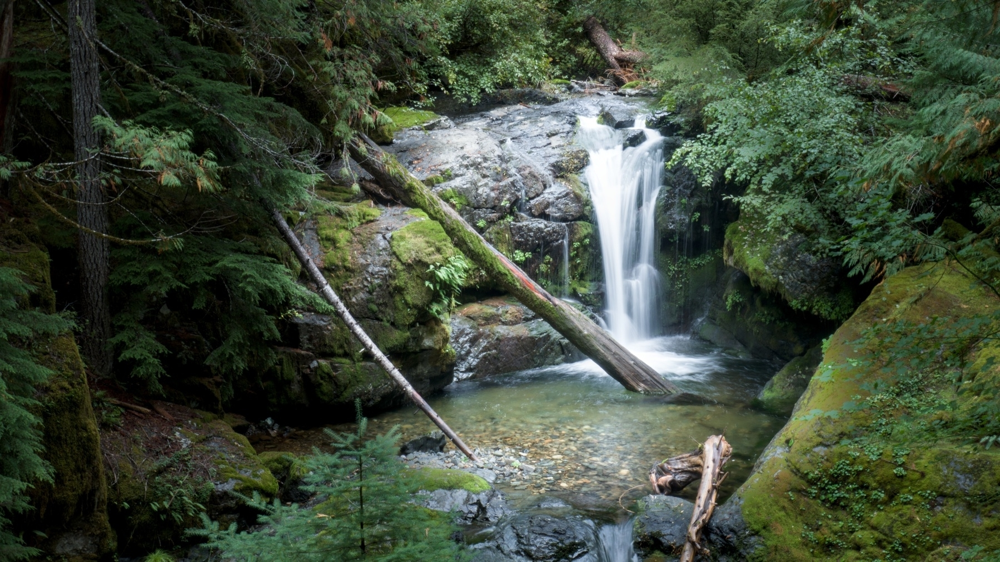
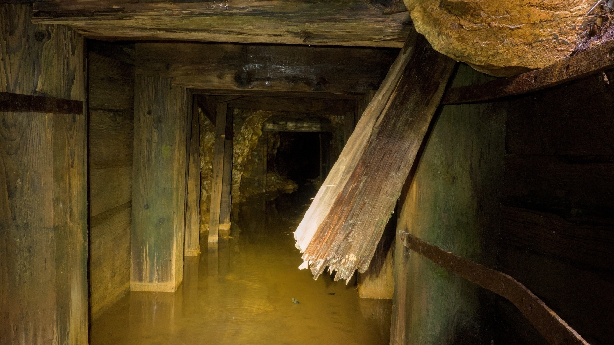
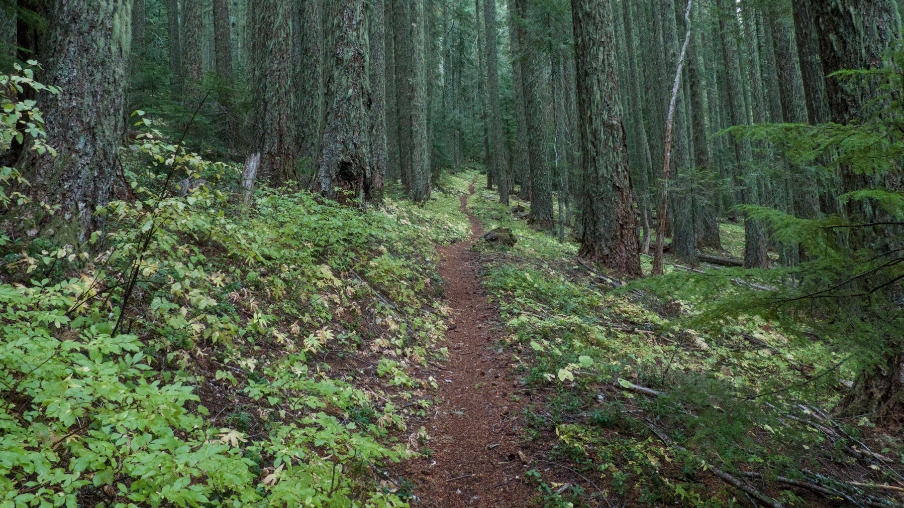
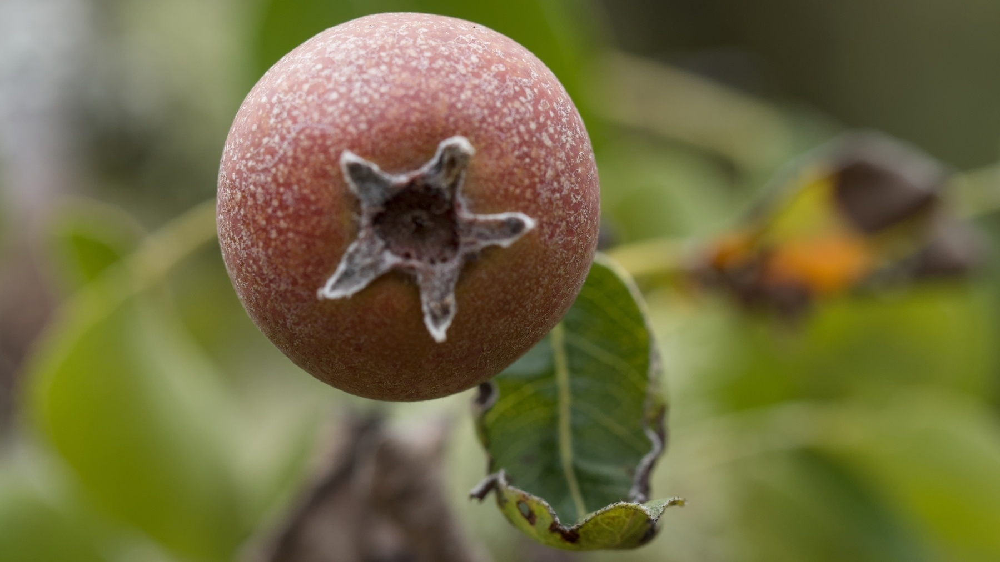
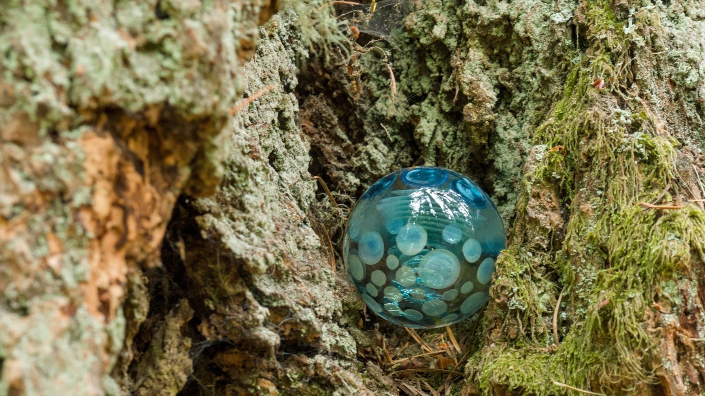
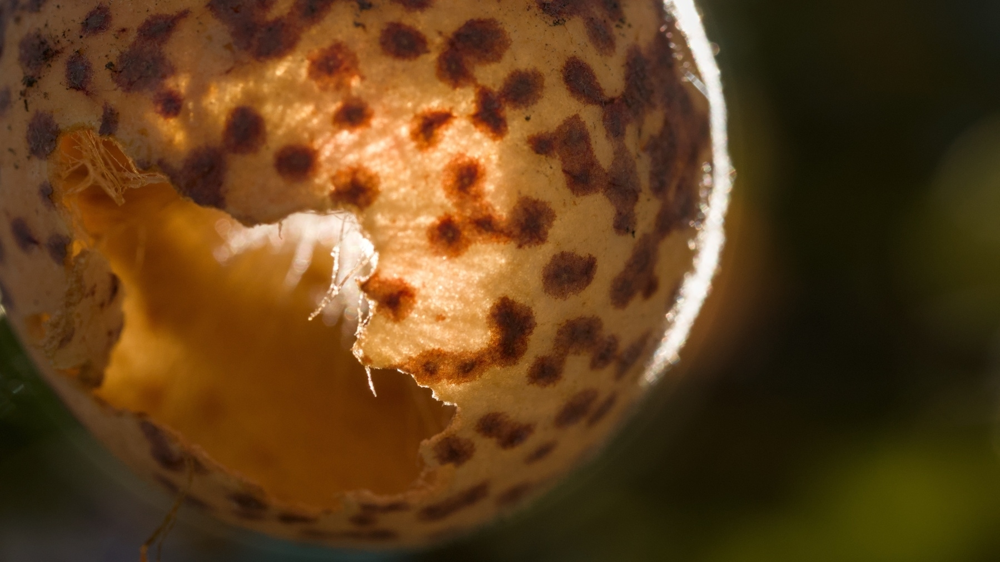

“Transience”
Olympus E-M10 IV with 60mm f/2.8 macro lens @ f/4, 1/60s, ISO 3200. Shot at Mount Pisgah.
“Fern Frolic”
Olympus E-M10 IV with 14-42mm kit lens @ 28mm, f/8, 1/60s, ISO 800. Shot along Champion Creek. Road
“Smith Falls”
Olympus E-M10 IV with 14-42mm kit lens @ 25mm, f/16, 1/2.5s, ISO 160. Shot from Champion Creek Road.
“Inside the Mine”
Olympus E-M10 IV with 14-42mm kit lens @ 14mm, f/8, 1/5s, ISO 500. Shot near the headwaters of Champion Creek.
“A Berry-Eating Bear Poops in the Woods”
Olympus E-M10 IV with 14-42mm kit lens @ 41mm, f/8, 1/500s, ISO 3200. Along the Noonday Wagon Road Trail.

“Ascent”
Olympus E-M10 IV with 14-42mm kit lens @ 14mm, f/5.6, 1/15s, ISO 6400. Heading up the Ollalie Trail towards Horsepasture Mountain.
I spent a good chunk of today hiking 12 1/2 miles with 3000 feet or so of elevation gain so I could spend a few minutes on top of a mountain in 35-degree weather with cold rain and snow flurries and near-zero visibility.
This is what passes for fun in my retirement.
“Fruitsplosion”
Olympus E-M10 IV with 60mm f/2.8 macro lens @ f/4, 1/100s, ISO 320. Found along the Ridgeline Trail.
“Trailside Art”
Olympus E-M10 IV with 60mm f/2.8 macro lens @ f/5.6, 1/15s, ISO 2500. Found along the Ridgeline Trail.
“Tiny Green Pumpkins”
Olympus E-M10 IV with 60mm f/2.8 macro lens @ f/5.6, 1/160s, ISO 2500. Shot at Wild Iris Ridge.
“Nobody Home”
Olympus E-M10 IV with 60mm f/2.8 macro lens @ f/5.6, 1/160s, ISO 1000. Shot at Wild Iris Ridge.
“Catching the Sun”
Olympus E-M10 IV with 60mm f/2.8 macro lens @ f/4, 1/125s, ISO 160. Shot at Wild Iris Ridge.

“Cedar”
Olympus E-M10 IV with 60mm f/2.8 macro lens @ f/2.8, 1/500s, ISO 500. Shot at Mount Pisgah Arboretum.

“Fishing Hole”
Olympus E-M10 IV with 14-42mm kit lens @ 17mm, f/8, 1/100s, ISO 500. Shot along the North Fork Middle Fork Willamette River.

“Hike at Your Own Risk”
Olympus E-M10 IV with 14-42mm kit lens @ 14mm, f/8, 1/13s, ISO 320. Shot along the North Fork Trail.

“Strange Fruit”
Olympus E-M10 IV with 60mm f/2.8 macro lens @ f/8, 1/30s, ISO 2500. Devil’s Matchstick Lichen along the North Fork Trail.

“Mushroom Rising”
Olympus E-M10 IV with 60mm f/2.8 macro lens @ f/13, 1/30s, ISO 800. Shot along the Deception Butte Trail.

“Beads”
Olympus E-M10 IV with 60mm f/2.8 macro lens @ f/8, 1/1000s, ISO 3200. Shot at Deception Butte.

“Lenses”
Olympus E-M10 IV with 60mm f/2.8 macro lens @ f/8, 1/80s, ISO 320. Shot near Kreuger Rock Falls.

“Cauldron of Dawn”
Olympus E-M10 IV with 14-42mm kit lens @ 14mm, f/8, 1/160s, ISO 250. Shot from Deception Butte.

“Smoky Storm”
Olympus E-M10 IV with 14-42mm kit lens @ 24mm, f/9, 1/320s, ISO 200. Shot at Mount Pisgah.


“Poised to Run”
Olympus E-M10 IV with 60mm f/2.8 macro lens @ f/2.8, 1/30s, ISO 2500. Shot at Mount Pisgah.

“Summer’s End”
Olympus E-M10 IV with 60mm f/2.8 macro lens @ f/5.6, 1/60s, ISO 100. Shot at Wild Iris Ridge.

“Howdy”
Olympus E-M10 IV with 60mm f/2.8 macro lens @ f/5.6, 1/1000s, ISO 1000. Shot at Wild Iris Ridge.

“Web”
Olympus E-M10 IV with 60mm f/2.8 macro lens @ f/2.8, 1/1000s, ISO 125. Shot at Wild Iris Ridge.

“Jabba”
Olympus E-M10 IV with 14-42mm kit lens @ 19mm, f/10, 1/200s, ISO 320. Shot from the Tire Mountain Trail.

“Green Ravine”
Olympus E-M10 IV with 14-42mm kit lens @ 14mm, f/8, 1/15s, ISO 2500. Shot from the Alpine Trail.

“Drunken Owl”
Olympus E-M10 IV with 14-42mm kit lens @ 14mm, f/8, 1/15s, ISO 2000. Shot from the Alpine Trail.

“The Marching Mushrooms”
Olympus E-M10 IV with 60mm f/2.8 macro lens @ f/5.6, 1/15s, ISO 2000. Shot near the Cloverpatch Trail.

“First Sign of Fall”
Olympus E-M10 IV with 14-42mm kit lens @ 42mm, f/5.6, 1/30s, ISO 2000. Shot from the Alpine Trail.

“Sunrise with Venus”
Olympus E-M10 IV with 7Artisans 7.5mm f/2.8 fisheye lens @ f/2.8, 1/30s, ISO 1600. Shot from the Alpine Trail.

“Ferns”
Olympus E-M10 IV with 60mm f/2.8 macro lens @ f/5, 1/25s, ISO 1600. Shot along the Ridgeline Trail.


“Leaf Roadmap”
Olympus E-M10 IV with 60mm f/2.8 macro lens @ f/4.5, 1/400s, ISO 500. Shot at Mount Pisgah.

“Awestruck”
Olympus E-M10 IV with 60mm f/2.8 macro lens @ f/5, 1/15s, ISO 1000. Shot along the Goodman Creek Trail.

“Unhappy Judges”
Olympus E-M10 IV with 60mm f/2.8 macro lens @ f/8, 1/30s, ISO 2000. Shot near the Lost Creek Trail.

“Gills”
Olympus E-M10 IV with 60mm f/2.8 macro lens @ f/8, 1/30s, ISO 12800. Shot along the Sawtooth Trail.

“Drip”
Olympus E-M10 IV with 60mm f/2,8 macro lens @ f/5.6, 1/13s, ISO 3200. Shot along the Sawtooth Trail.

“Layers”
Olympus E-M10 IV with M.Zuiko 40-150mm lens @ 62mm, f/8, 1/200s, ISO 400.
Despite the stylized look, I did no post-processing on this image at all. Wildfire smoke in the air took care of everything for me.

“Caught on the Horns”
Olympus E-M10 IV with 14-42mm kit lens @ 24mm, f/4.3, 1/30s, ISO 8000. Shot from the Hardesty Trail.

“Morning on the Trail”
Olympus E-M10 IV with 60mm f/2.8 macro lens @ f/8, 1/30s, ISO 320. Shot along the Hardesty Mountain Trail.

“Meeting”
Olympus E-M10 IV with 60mm f/2.8 macro lens @ f/14, 1/320s, ISO 640. Shot at Mount Pisgah.

“Mantis Love”
Olympus E-M10 IV with 60mm f/2.8 macro lens @ f/8, 1/320s, ISO 500. Shot at Mount Pisgah.


“Waiting for the Wind”
Olympus E-M10 IV with 60mm f/2.8 macro lens @ f/6.3, 1/500s, ISO 640. Shot at Mount Pisgah.

“Pretty Poison”
Olympus E-M10 IV with 60mm f/2.8 macro lens @ f/5.6, 1/60s, ISO 500. Shot at Mount Pisgah.

“Snowberries”
Olympus E-M10 IV with 14-42mm kit lens @ 42mm, f/8, 1/320s, ISO 6400. Shot along the Browder Ridge Trail.

“Cloud Sisters”
Olympus E-M10 IV with 14-42mm kit lens @ 34mm, f/13, 1/400s, ISO 160. Shot from the Browder Ridge Trail.

“Island in the Mist”
Olympus E-M10 IV with 14-42mm kit lens @ 35mm, f/8, 1/250s, ISO 320. Shot along the Browder Ridge Trail.

“What are YOU staring at?”
Olympus E-M10 IV with 100-400mm lens @ 400mm, f/8, 1/500s, ISO 12800. Shot in my back yard.

“Wet Nose”
Olympus E-M10 IV with 60mm f/2.8 macro lens @ f/8, 1/30s, ISO 1250. Shot along the Lawler Trail.

“Chicken of the Woods”
Olympus E-M10 IV with 14-42mm kit lens @ 42mm, f/8, 1/30s, ISO 1250. Shot along the Santiam Wagon Road Trail.

“Trees and Sky”
Olympus E-M10 IV with 14-42mm kit lens @ 23mm, f/8, 1/20s, ISO 250. Shot along the Santiam Wagon Road Trail.

“Pop”
Olympus E-M10 IV with 14-42mm kit lens @ 42mm, f/8, 1/30s, ISO 400. Shot near Sevenmile Horse Camp.

“The Path”
Olympus E-M10 IV with 14-42mm kit lens @ 14mm, f/8, 1/13s, ISO 3200. Shot along the Santiam Wagon Road Trail.

“Grotto”
Olympus E-M10 IV with 14-42mm kit lens @ 14mm, f/10, 1/3s, ISO 2000. Shot at House Rock Falls.

“Rainbow Spray”
Olympus E-M10 IV with 14-42mm kit lens @ 14mm, f/16, 1/1.3s, ISO 125. Shot at Thor’s Well.

“Camouflage”
Olympus E-M10 IV with 60mm f/2.8 macro lens @ f/8, 1/60s, ISO 100. There are three sandpipers in this shot from Thor’s Well.

“Barnacles”
Olympus E-M10 IV with 7 Artisans 7.5mm f/1.8 fisheye lens @ f/14, 1.6s, ISO 200. Shot near Thor’s Well on the Oregon Coast.

“Puddle”
Olympus E-M10 IV with 14-42mm kit lens @ 25mm, f/4.4, 1/2500s, ISO 3200. Shot at Washburne Day Use Area.

“Hiker Begone!”
Olympus E-M10 IV with M.Zuiko 40-150mm lens @ 150mm, f/8, 1/30s, ISO 1600. Shot at the edge of Cummins Creek Wilderness.

“Fern Goblet”
Olympus E-M10 IV with 14-42mm kit lens @ 17mm, f/8, 1/30s, ISO 640. Shot at Heceta Head.

“Exploding Star”
Olympus E-M10 IV with 60mm f/2.8 macro lens @ f/8, 1/80s, ISO 1600. Shot at Hobbit Beach.

“Hanging Around”
Olympus E-M10 IV with 14-42mm kit lens @ 42mm, f/8, 1/80s, ISO 1250. Shot at Hobbit Beach.

“Culprits”
Olympus E-M10 IV with 14-42mm kit lens @ 42mm, f/8, 1/40s, ISO 100. Shot at Hobbit Beach.

“Anemone Parade”
Olympus E-M10 IV with 60mm f/2.8 macro lens @ f/8, 1/160s, ISO 400. Shot at Hobbit Beach.

“OREGON”
Olympus E-M10 IV with 14-42mm kit lens @ 14mm, f/3.5, 1/60s, ISO 640. Sand cliff art at Hobbit Beach.


‘Foggy Morning"
Olympus E-M10 IV with 14-42mm kit lens @ 14mm, f/3.5, 1.3s, ISO 250. Shot at Hobbit Beach.

“New Trees From Old”
Olympus E-M10 IV with 14-42mm kit lens @ 40mm, f/5.5, 1/80s, ISO 125. Shot along the South Pyramid Creek Trail.

“Brains!”
Olympus E-M10 IV with 14-42mm kit lens @ 41mm, f/8, 1/25s, ISO 2000. Shot along the South Pyramid Creek Trail.

“Screaming”
Olympus E-M10 IV with 60mm f/2.8 macro lens @ f/8, 1/30s, ISO 4000. Shot along the Crescent Mountain Trail.

“One Juniper Berry”
Olympus E-M10 IV with 14-42mm kit lens @ 36mm, f/8, 1/1000s, ISO 1250. Shot at the top of Crescent Mountain.

“Smoky Dawn”
Olympus E-M10 IV with 14-42mm kit lens @ 42mm, f/8, 1/200s, ISO 160. Mount Washington from the Crescent Mountain Trail.

“Black Gold”
Olympus E-M10 IV with 14-42mm kit lens @ 42mm, f/8, 1/250s, ISO 2000. Shot along the North Umpqua Trail.

“Fireweed”
Olympus E-M10 IV with 14-42mm kit lens @ 42mm, f/8, 1/500s, ISO 200. Shot along the North Umpqua Trail.

“Silent Conversation”
Olympus E-M10 IV with 60mm f/2.8 macro lens @ f/8, 1/250s, ISO 1000. Shot at Moon Mountain.

“Thistle”
Olympus E-M10 IV with 14-42mm kit lens @ 42mm, f/8, 1/800s, ISO 250. Shot at the North Bank Habitat Management Area.

“Morning Light”
Olympus E-M10 IV with 14-42mm kit lens @ 42mm, f/8, 1/400s, ISO 400. Shot from the North Bank Habitat Management Area.

“Dawn Hog”
Olympus E-M10 IV with 14-42mm kit lens @ 15mm, f/8, 1/80s, ISO 200. Hog Mountain shot from the North Bank Habitat Management Area.

“Flyover”
Olympus TG6 with Ultimaxx macro lens @ 18mm, f/4.9, 1/200s, ISO 800. Shot along the Mount Yoran Trail.

“Huckleberry Season”
Olympus E-M10 IV with 14-42mm kit lens @ 42mm, f/8, 1/250s, ISO 800. Shot along the Vivian Lake Trail.

“Looming”
Olympus E-M10 IV with 14-42mm kit lens @ 14mm, f/8, 1/200s, ISO 500. Mount Yoran behind Divide Lake.

“Diamond in the Lake”
Olympus E-M10 IV with 14-42mm kit lens @ 14mm, f/8, 1/250s, ISO 400. Diamond Peak reflected in Lils Lake.

“Morning Star”
Olympus E-M10 IV with 14-42mm kit lens @ 24mm, f/8, 1/5s, ISO 6400. Shot from FR 5893 near Salt Creek Falls.

“Photographer”
Olympus E-M10 IV with 14-42mm kit lens @ 19mm, f/8, 1/200s, ISO 125. Shot at Horse Rock Ridge.

“Bug Convention”
Olympus E-M10 IV with M.Zuiko 60mm f/2.8 macro lens @ f/8, 1/320s, ISO 200. Shot at Buck Mountain.

“Sickle”
Olympus E-M10 IV with M.Zuiko 60mm f/2.8 macro lens @ f/8, 1/40s, ISO 250. Shot at Buck Mountain.

“Remembrance of Fire Towers Past”
Olympus E-M10 IV with 14-42mm kit lens @ 25mm, f/9, 1/1600s, ISO 800. Shot at the top of Buck Mountain.

“Tidbits”
Olympus E-M10 IV with M.Zuiko 100-400mm lens and MC-20 teleconverter @ 400mm, f/11.9, 1/1600s, ISO 1600. Tidbits Mountain seen from Buck Mountain.

“Modern Dancer”
Olympus E-M10 IV with 14-42mm kit lens @ 28mm, f/8, 1/320s, ISO 200. Shot at the top of Buck Mountain.

“Too Late”
Olympus E-M10 IV with M.Zuiko 60mm f/2.8 macro lens @ f/2.8, 1/80s, ISO 250. Thistle head at Mount Pisgah.

“Monochrome Wings”
Olympus E-M10 IV with M.Zuiko 60mm f/2.8 macro lens @ f/18, 1/200s, ISO 2000. Pine White butterfly near Spirit Falls.

“Get a Haircut!”
Olympus E-M10 IV with M.Zuiko 60mm f/2.8 macro lens @ f/8, 1/30s, ISO 6400. Shot on the Moon Falls Trail.

“The Island”
Olympus E-M10 IV with 14-42mm kit lens @ 31mm, f/8, 1/50s, ISO 250. Shot at Notch Lake.

“Space Invader”
Olympus E-M10 IV with M.Zuiko 60mm f/2.8 macro lens @ f/8, 1/200s, ISO 6400. Shot along the Maiden Lake Trail.

“The Sap Rises”
Olympus E-M10 IV with M.Zuiko 60mm f/2.8 macro lens @ f/8, 1/25s, ISO 250. Pinesap flowers along the Maiden Lake Trail.

“Brainiac”
Olympus E-M10 IV with M.Zuiko 40-150mm lens @ 140mm, f/8, 1/25s, ISO 1600. Shot along the Maiden Lake Trail.

“Mountains Near and Far”
Olympus E-M10 IV with M.Zuiko 40-150mm lens @ 82mm, f/8, 1/320s, ISO 125. Diamond Peak seen from Maiden Peak Summit Trail.

“Lakeside View”
Olympus E-M10 IV with 14-42mm kit lens @ 14mm, f/8, 1/2000s, ISO 5000. Odell Lake and Crescent Lake seen from Maiden Peak.

“Wilderness Dawn”
Olympus E-M10 IV with 14-42mm kit lens @ 14mm, f/3.5, 1/2000s, ISO 250. Middle & South Sister, Cultus Mountain, Broken Top, Mount Bachelor and Crane Prairie Reservoir seen from Maiden Peak.

“Framed”
Olympus E-M10 IV with 14-42mm kit lens @ 42mm, f/5.6, 1/400s, ISO 320. Diamond Peak seen from Maiden Peak.

“Too Big To Eat”
Olympus TG-6 with Ultimaxx macro lens @ 18mm, f/4.9, 1/200s, ISO 2000. Shot at Wild iris Ridge.

“Ridges”
Olympus E-M10 IV with 14-42mm kit lens @ 31mm, f/8, 1/100s, ISO 200. Shot from FR 1994 near Cougar Reservoir.

“Low Water”
Olympus E-M10 IV with 14-42mm kit lens @ 14mm, f/8, 1/30s, ISO 200. Shot at Cougar Reservoir.

“Hayhenge”
Olympus E-M10 IV with M.Zuiko 45mm f/1.8 lens @ f/8, 1/640s, ISO 250. Shot at Mount Pisgah.

“Fall is Coming”
Olympus E-M10 IV with M.Zuiko 45mm f/1.8 lens @ f/8, 1/60s, ISO 1600. Shot at Mount Pisgah.


“Swimming Hole”
Olympus E-M10 IV with M.Zuiko 100-400mm lens @ 200mm, f/14, 1/400s, ISO 1600. Benson Lake seen from Scott Mountain.

“Framed Sisters”
Olympus E-M10 IV with 7 Artisans 7.5mm f/1.8 fisheye lens @ f/5.6, 1/2000s, ISO 200. Shot from Scott Mountain.

“Resting”
Olympus E-M10 IV with 14-42mm kit lens @ 42mm, f/8, 1/250s, ISO 160. Alpine Buckwheat with Fritallary Butterfly along the Hand Lake Trail.


“Sadness”
Olympus E-M10 IV with 14-42mm kit lens @ 14mm, f/8, 1/125s, ISO 320. Shot at Buck Meadows.

“Camofrog”
Olympus E-M10 IV with 14-42mm kit lens @ 42mm, f/8, 1/60s, ISO 200. Shot along the Louise Creek Trail.

“Fire and Ice”
Olympus E-M10 IV with M.Zuiko 45mm f/1.8 lens @ f/7.1, 1/1250s, ISO 1250. Shot along the PCT near Collier Cone.

“This Way to California”
Olympus E-M10 IV with 14-42mm kit lens @ 14mm, f/8, 1/500s, ISO 500. SOBO PCT near Collier Cone.

“Hippie-on-a-Stick”
Olympus E-M10 IV with M.Zuiko 40-150mm lens @ 92mm, f/8, 1/500s, ISO 6400. Western Pasque Flower, aka Hippie-on-a-stick, near the Scott/PCT junction.

“Looming”
Olympus E-M10 IV with 14-42mm kit lens @ 14mm, f/8, 1/200s, ISO 160. Collier Cone from the Scott/PCT junction.

“Poor Choices”
Olympus E-M10 IV with 14-42mm kit lens @ 26mm, f/8, 1/50s, ISO 1600. Shot along the Scott Trail.

“Gateway”
Olympus E-M10 IV with 14-42mm kit lens @ 14mm, f/4.5, 1/640s, ISO 200. Shot along the Eugene to Crest Trail.

“Skeletal Bears”
Olympus E-M10 IV with 14-42mm kit lens @ 33mm, f/8, 1/1000s, ISO 2000. Bear grass stalks after losing their flowers along the Eugene to Crest Trail.

“All Fall Down”
Olympus E-M10 IV with M.Zuiko 40-150mm lens @ 150mm, f/8, 1/320s, ISO 200. Shot from the Eugene to Crest Trail along Bunchgrass Ridge. I believe this is the scar from the 2008 Frazier Landslide.

“Starry Morning”
Olympus E-M10 IV with M.Zuiko 45mm f/1.8 lens and Raynox 250 macro lens @ f/8, 1/1600s, ISO 1000. Shot along the Eugene to Crest Trail.

“Hoot”
Olympus E-M10 IV with M.Zuiko 45mm f/1.8 lens and Raynox 250 macro lens @ f/8, 1/1600s, ISO 3200. Shot along the Eugene to Crest Trail. I believe this is Toothed Owl’s Clover.

“Corny”
Olympus E-M10 IV with 14-42mm kit lens @ 40mm, f/8, 1/500s, ISO 4000. Corn lilies along the Eugene to Crest Trail.

“Toasted Hiker”
Olympus E-M10 IV with 14-42mm kit lens @ 42mm, f/5.6, 1/320s, ISO 3200. Shot along the Eugene to Crest Trail.

“Showy”
Olympus E-M10 IV with 14-42mm kit lens @ 42mm, f/5.6, 1/320s, ISO 3200. Washington Lily along the Eugene to Crest Trail.

“Diamond Peak”
Olympus E-M10 IV with M.Zuiko 40-150mm lens @ 150mm, f/5.6, 1/320s, ISO 125. Shot from the Eugene to Crest Trail along Bunchgrass Ridge.

“Cascade Dawn”
Olympus E-M10 IV with 14-42mm kit lens @ 28mm, f/8, 1/250s, ISO 1600. Just before sunrise along Bunchgrass Ridge.

“Splish Splash”
Olympus E-M10 IV with M.Zuiko 45mm f/1.8 lens @ f/1.8, 1/3200s, ISO 1250. Garter snake swimming in the Willamette River at Elijah Bristow State Park.


“Nighttime Companion”
Olympus E-M10 IV with 14-42mm kit lens @ 42mm, f/5.6, 1/30s, ISO 250. Shot along the Goodman Creek Trail.

“Ghostly Pipes”
Olympus E-M10 IV with 14-42mm kit lens @ 28mm, f/8, 1/13s, ISO 6400. Indian Pipe growing along the Goodman Creek Trail.

“Keeping an Eye on the Logging”
Olympus E-M10 IV with 14-42mm kit lens @ 42mm, f/8, 1/1000s, ISO 2000.

“Afternoon at Eagle’s Rest”
Olympus E-M10 IV with 7 Artisans 7.5mm f/2.8 fisheye lens @ f/2.8, 1/250s, ISO 2500.

“Breath of Air”
Olympus E-M10 IV with M.Zuiko 60mm f/2.8 macro lens @ f/6.3, 1/400s, ISO 6400. Shot along the Goodman Creek Trail.

“Speckles”
Olympus E-M10 IV with M.Zuiko 60mm f/2.8 macro lens @ f/8, 1/80s, ISO 4000. False Solomon’s Seal fruit along the Goodman Creek Trail.

“Precarious”
Olympus E-M10 IV with M. Zuiko 100-400mm lens and MC-20 teleconverter @ 800mm, f/14, 1/250s, ISO 1250. Cormorant nesting near Heceta Head.

“No Swimming”
Olympus E-M10 IV with M. Zuiko 100-400mm lens and MC-20 teleconverter @ 200mm, f/14, 1/125s, ISO 320. Oregon coast near Heceta Head.

“Island of Lions”
Olympus E-M10 IV with 14-42 kit lens @ 41mm, f/6.3, 1/30s, ISO 6400. Shot inside Sea Lion Cave.

“Waiting”
Olympus E-M10 IV with M. Zuiko 100-400mm lens and MC-20 teleconverter @ 800mm, f/13, 1/200s, ISO 400. Shot at the Oregon coast near Sea Lion Cave.

“The Gull Stands Alone”
Olympus E-M10 IV with M. Zuiko 100-400mm lens and MC-20 teleconverter @ 800mm, f/13, 1/200s, ISO 500. Shot at the Oregon coast near Sea Lion Cave.

“Weeding”
Olympus E-M10 IV with M. Zuiko 100-400mm lens and MC-20 teleconverter @ 800mm, f/13, 1/200s, ISO 500. Shot at the Oregon coast. near Sea Lion Cave.

“Nesting”
Olympus E-M10 IV with M. Zuiko 100-400mm lens and MC-20 teleconverter @ 800mm, f/13, 1/200s, ISO 500. Cormorants on the Oregon coast.

“Sleepytime”
Olympus E-M10 IV with M. Zuiko 100-400mm lens and MC-20 teleconverter @ 800mm, f/13, 1/80s, ISO 400. Steller’s Sea Lions on the Oregon coast.

“Dawn”
Olympus E-M10 IV with 14-42mm kit lens @ 42mm, f/8, 1/200s, ISO 250. Looking over Lookout Reservoir. towards Diamond Peak

“Quiet Morning”
Olympus E-M10 IV with 14-42mm kit lens @ 37mm, f/8, 1/5s, ISO 6400. Pre-dawn twilight over Lookout Reservoir.


“Beetle Time”
Olympus E-M10 IV with M. Zuiko 60mm f/2.8 macro lens @ f/5, 1/30s, ISO 320. Shot at Wild Iris Ridge.

Finished: The Exile, by Pearl S. Buck 📚: This is the author’s lightly-fictionalized memoir of her mother, who was a Christian missionary’s wife in China and apparently a thoroughly good person, devoted to the service of others, though she never actually found the God she was searching for. I enjoyed reading it and pondering this now-forgotten life, though books like this are enough out of fashion that it’s now out of print as well.
“Moo”
Olympus E-M10 IV with M. Zuiko 60mm f/2.8 macro lens @ f/8, 1/30s, ISO 3200. Cow parsnip seeds at Wild Iris Ridge.

“Slightly Squished”
Olympus E-M10 IV with M. Zuiko 100-400mm lens plus MC-20 teleconverter @ 800mm, f/18, 1/500s, ISO 2500. One day post-full moon shot handheld at Wild Iris Ridge.

Finished: The Steel Wave, by Jeff Shaara 📚: Second of Shaara’s novels of WWII, this one covers from preparations for the Normandy invasion through the death of Rommel in the aftermath of the attempted assassination of Hitler. Told through a mix of frontline and command-staff characters, as far as I can tell it stays pretty faithful to actual history, while still telling some good stories.
Finished: Unicorn Variations, by Roger Zelazny 📚: Probably my favorite collection of Zelazny shorts. The titular story holds up well, and “Home is the Hangman” is surprisingly resonant in these AI-heavy days (as is the cute little “Walpurgisnacht”). I think I reread this one about once a year.
Am I forgetting more because of age, or just noticing it more because I have spare time? Either way I was out in 90-degree full sun for a mile or more of walking today before I realized I wasn’t wearing my hat.
Fortunately I’m retired so it probably doesn’t matter if I cook my brains a bit.
“Waiting for the Wind”
Olympus E-M10 IV with M. Zuiko 45mm f/1.8 lens and Raynox M-250 macro lens @ f/2.5, 1/400s, ISO 1000. Shot at Wild Iris Ridge.

“Moonset”
Olympus E-M10 IV with M. Zuiko 45mm f/1.8 lens @ f/2.8, 1/350s, ISO 200. Shot at Wild Iris Ridge.

“Posing”
Olympus E-M10 IV with 14-42mm kit lens @ 42mm, f/8, 1/160s, ISO 160. I think a California Tortoiseshell along the South Waldo Trail.

“Snow Cone”
Olympus E-M10 IV with M. Zuiko 60mm f/2.8 macro lens @ f/7.1, 1/250s, ISO 100. Shot along the Mount Ray Trail.

“Miles of Hiking”
Olympus E-M10 IV with 14-42mm kit lens @ 14mm, f/8, 1/200s, ISO 100. Looking across Waldo Lake into the Three Sisters Wilderness from the High Divide Trail.

“Cliff”
Olympus E-M10 IV with M. Zuiko 40-150mm lens @ 150mm, f/8, 1/200s, ISO 160. Fuji Mountain seen from just above Deer Camp Lake.

“Old Life, New Life”
Olympus E-M10 IV with 14-42mm kit lens @ 42mm, f/8, 1/200s, ISO 640. Along the High Divide Trail.

“e”
Olympus E-M10 IV with 14-42mm kit lens @ 34mm, f/8, 1/500s, ISO 640. Along the High Divide Trail.

Judges rule against Trump appeal in E. Jean Carroll case
Just a little reminder that the President is a multiple felon convicted sexual abuser.
Vietnam thought it had a deal on its US tariff rate. Then Trump stepped in.
Looks like the reason we haven’t seen details of the deal Trump announced is because there is no deal. Why any country would bother negotiating with the buffoons in the US is a mystery. The whole world should just 100% embargo us.
Tornado Cash Made Crypto Anonymous. Now One of Its Creators Faces Trial
I’m no fan of crypto, North Korean hackers, or money laundering - but this case is still very troubling. It’s essentially a step towards thoughtcrime: making it illegal to release code that other people can misuse.
Harvard Abruptly Caves to Trump After Months of Fighting
At least to the extent of backing away from DEI efforts. Disappointing, but it’s hard to see how any institution can stand up to the current level of unrestrained thuggery being displayed by “our” government.
“A Thousand Flowers Blooming”
Olympus E-M10 IV with 14-42mm kit lens @ 14mm, f/8, 1/500s, ISO 1250. Beargrass along the High Divide Trail through the 2022 Ceder Creek fire scar.

Good: my city is running a survey to get citizen input. Bad: they’re capturing IP addresses for geolocation without telling people.
TIL that Thunderbird has incoming message filters for RSS. Now there are 98% fewer Amazon Prime Day posts in the feeds I follow. This is a feature that actually makes me happy.
Didn’t finish: Cronies, by Ken Babbs 📚: Well, I really wanted to like this one, but I realized after 100 pages that it was just turning into a dreadful slog. It’s a “burlesque” tale of the Merry Pranksters and associated bits of the sixties, but the style and storytelling overwhelm any history.
“Devastated”
Olympus E-M10 IV with 14-42mm kit lens @ 14mm, f/8, 1/80s, ISO 320. High Divide Trail through the 2022 Ceder Creek fire scar.

“The Road Ahead”
Olympus E-M10 IV with 14-42mm kit lens @ 14mm, f/8, 1/320s, ISO 200. FR 5883 near the Fuji Mountain Trail.

“Embrace the Rock”
Olympus E-M10 IV with 14-42mm kit lens @ 14mm, f/8, 1/80s, ISO 250. Shot along the Fuji Mountain Trail.

Generative Ghosts: Anticipating Benefits and Risks of AI Afterlives
I wonder whether we’re at the point where a will or end-of-life directive should contain instructions about whether one wishes to persist as a digital double. I wonder whether such wishes would be legally binding on heirs.
RFK Jr. promoted a food company he says will make Americans healthy. Their meals are ultraprocessed
The Secretary of HHS ignorant? What a complete surprise.

Is Earth inside a huge void? ‘Sound of the Big Bang’ hints at possible solution to Hubble tension
Obviously the extraterrestrials have quarantined us due to the prevalence of idiocy on Earth.
Prime “Day” is now 4 days long. Half of my RSS feed has been hijacked by “best Prime Day deal” affiliate links.
I’m so happy I walked away from a decades-long Amazon relationship this year.
Heavily armed immigration agents descend on L.A.’s MacArthur Park
Yeah, because who walks through a PARK without automatic weapons? I’m glad I don’t live in LA any more.
Netanyahu nominates Trump for Nobel Peace Prize
War criminals gotta stick together, I guess.
Finished: These Restless Heads, by Branch Cabell 📚. Not a part of the Biography of Manuel (and therefore using the other variant of his name), this is a collection of Cabell’s essays on life and writing, together with one short story (or is it a parable of an aging poet?). I enjoyed it as I enjoy all of his writings, which pack in more style and vocabulary than any modern writer I know of.

Trump announces new tariffs of up to 40% on a growing number of countries
I don’t know which is worse, the coming (just in time for Christmas!) era of inflation, or the use of Trump’s semi-illiterate, rambling, random capitalization style on what are now official documents of the United States. I guess DOGE got rid of all the copy editors.

Finished: Mutiny on the Bounty Trilogy
Finished: Mutiny on the Bounty Trilogy, by Charles Nordoff and James Norman Hall 📚. My copy of these 1930’s novels is a more recent reprint bound as a single (700-page) volume, though you can also buy the novels separately.
Mutiny on the Bounty itself is the strongest of the three, which is probably why it’s the only one most people know. It tells of the voyage of the Bounty, the mutiny, and the fate of a few of the sailors who were arrested on Tahiti after Captain Bligh returned to England. It has the court-martial records as a major source, and so is pretty well fleshed out (though the authors clearly filled in gaps and romanticized some things).
Men Against the Sea tells of the long voyage the Bligh and some of the non-mutinous sailors took in a tiny boat to Java, whence they eventually made it back to England. This 3600-mile voyage is right up with Shackleton’s better-known one in terms of adventure, but the major source is Bligh’s own sketchy log and so there were a lot of blanks to fill in.
Pitcairn’s Island is the story of the remaining mutineers, their isolated settlement, their downfall into violence and murder, and their eventual rediscovery. All we really have for source material here are the conflicting and likely self-serving recollections of the last surviving mutineer, so the authors have had to pretty much fantasize about what actually happened.
If you like sea yarns, though, the whole trilogy is worth reading; I never once thought of putting the book down unfinished.
“Shy Prince”
Olympus E-M10 IV with M.Zuiko 60mm f/2.8 macro lens @ f/8, 1/40s, ISO 1250. Prince’s Pine flowers along the Middle Fork Trail.

“Suggestive”
Olympus E-M10 IV with M.Zuiko 60mm f/2.8 macro lens @ f/8, 1/250s, ISO 6400. Pinedrop along the Middle Fork Trail.

Finished: Ghost Fleet, by P.W. Singer and August Cole 📚 - “A novel of the next world war,” in this case a non-nuclear limited engagement between the US and China. Written a decade ago, but some of it anticipates the rise of drone and electronic warfare. I doubt things could actually remain non-nuclear if China really did take Hawaii, but a good summer read anyhow.
Finished: The Last Defender of Camelot, by Roger Zelazny 📚 - A collection of Zelazny’s short fiction. Standouts include the original (shorter) version of “Damnation Alley” and “For a Breath I Tarry.” Enjoyable, as is all Zelazny.
“Bugged”
Olympus E-M10 IV with M.Zuiko 60mm f/2.8 macro lens @ f/5.6, 1/250s, ISO 250. Shot along the Middle Fork Trail.


“Mystery Bird”
Olympus E-M10 IV with 14-42mm kit lens @ 23mm, f/5, 1/80s, ISO 2500. Shot along the Middle Fork Trail.

“Reach for the Sky”
Olympus E-M10 IV with 14-42mm kit lens @ 38mm, f/5.4, 1/200s, ISO 100. Shot along the Middle Fork Trail.

“Mini Niagara”
Olympus E-M10 IV with 14-42mm kit lens @ 17mm, f/8, 1/4s, ISO 160. Shot along the Middle Fork Trail.

“Bowing Candystick”
Olympus E-M10 IV with 14-42mm kit lens @ 37mm, f/5.6, 1/30s, ISO 2500. Shot along the Middle Fork Trail.

“Pinesap”
Olympus E-M10 IV with 14-42mm kit lens @ 33mm, f/5.6, 1/30s, ISO 2000. Shot along the Middle Fork Trail. One of the strange forest saprophytes we get around here.

“Cascadia Revolt!”
Olympus E-M10 IV with 14-42mm kit lens @ 14mm, f/8, 1/13s, ISO 3200. Shot along the Middle Fork Trail.

“Water from Nowhere”
Olympus E-M10 IV with 14-42mm kit lens @ 14mm, f/8, 1/30s, ISO 5000. Chuckle Springs near the Middle Fork Trail.

Didn’t finish: Black Wave, by Jean Silverwood 📚. The story of a family sea voyage cut short by a shipwreck on a hidden reef and a horrendous injury. The adventure story is interesting enough, but I gave up about two-thirds of the way through when it seemed that the wife & husband co-authors were just looking for more life lessons to pad the page count.
Record-Breaking Results Bring Fusion Power Closer to Reality
A literal bright spot on the horizon. I do hope to see utility-scale fusion power in my lifetime, though I’m not super-optimistic about that.
Donald Trump says he wants to stage UFC fight on White House grounds
Only because he doesn’t think he can get away with full-on gladiatorial combat to the death yet.
Congress Gives ICE More Money Than It Could Have Ever Imagined
ICE will now be flushed with more cash than the Federal Bureau of Investigations; Drug Enforcement Administration; Bureau of Alcohol, Tobacco, Firearms and Explosives; U.S. Marshals Service; and Bureau of Prisons combined.
Fuck the Republicans in this Congress. I hope every single one of them loses their seat in 2026. And then gets deported to an El Salvadoran prison.
“Outskirts”
Olympus E-M10 IV with Mieke 25mm f/1.8 lens @ f/2.8, 1/4000s, ISO 200. Taken from close to the top of Mount Pisgah. Despite the look this is 2025 Eugene.

“Trail to the Top”
Olympus E-M10 IV with Mieke 25mm f/1.8 lens @ f/2.8, 1/4000s, ISO 160. Shot at Mount Pisgah.

“Waiting for the Wind”
Olympus E-M10 IV with Mieke 25mm f/1.8 lens @ f/2.8, 1/4000s, ISO 200. Shot at Mount Pisgah.

It’s the time of year when I can stop checking the pollen count every morning and start checking the PM2.5 particulate count instead.
“The Barn”
Olympus E-M10 IV with Mieke 25mm f/1.8 lens @ f/2.8, 1/3200s, ISO 200. Shot at Mount Pisgah. I wandered around today using the camera’s built-in “gentle sepia” art setting. This is one of the images that I think worked pretty well.

“Recovery”
Olympus E-M10 IV with 60mm f/2.8 macro lens @ f/6.3, 1/1600s, ISO 250. One of the first pine seedlings after the 2022 Cedar Creek fire. Shot along the Jim Weaver Loop Trail.

“Crossing the Desert Sands”
Olympus E-M10 IV with 60mm f/2.8 macro lens @ f/6.3, 1/1600s, ISO 640. Shot in the burned area along the Jim Weaver Loop Trail.

“Pollinator”
Olympus E-M10 IV with 60mm f/2.8 macro lens @ f/5.6, 1/1000s, ISO 100. Bee in bear grass along the Wahanna Trail.

“Hiker’s Rest Stop”
Olympus E-M10 IV with 14-42mm kit lens @ 18mm, f/11, 1/200s, ISO 500. Taylor Burn USFS cabin.


“Plunge”
Olympus E-M10 IV with 14-42mm kit lens @ 14mm, f/22, 1/2.5s, ISO 250. Unnamed waterfall between Middle and Lower Erma Bell lakes seen from above.

“Stark”
Olympus E-M10 IV with 14-42mm kit lens @ 14mm, f/11, 1/200s, ISO 200. Hiking the Wahanna Trail after the Cedar Creek Fire.
#mbjune Day 30: solitude 📷

“Resting”
Olympus E-M10 IV with 14-42mm kit lens @ 42mm, f/11, 1/125s, ISO 100. Next to Middle Erma Bell Lake.

“Searching”
Olympus TG-6 @ 5.4mm, f/3.2, 1/160s, ISO 100. Tendrils of Oregon Manroot looking for something to wind around at Mount Pisgah.
#mbjune Day 29: winding 📷

“Ozymandias”
Olympus E-M10 IV with 14-42mm kit lens @ 35mm, f/11, 1/400s, ISO 640. Along the Rigdon Lakes Trail.

“Trails for Miles”
Olympus E-M10 IV with 14-42mm kit lens @ 14mm, f/11, 1/400s, ISO 400. Climbing up from Lake Kiwa on the Rigdon Lakes Trail.

“A Little Breeze”
Olympus E-M10 IV with 14-42mm kit lens @ 14mm, f/11, 1/200s, ISO 200. Lower Rigdon Lake.

The World Is Producing More Food than Ever—but Not for Long
Based on a study published in Nature, Wired reports
For every degree Celsius of warming, global food production is likely to decline by 120 calories per person per day.
Soylent green, anyone?
The AI Backlash Keeps Growing Stronger
An overview of the arguments against the current AI industry. I suspect, though, that those who want to make money from AI will continue to be ascendant whatever the pushback.
“Fleeting"
Olympus E-M10 IV with 60mm f/2.8 macro lens @ f/4.5, 1/150s, ISO 1000. Shot on Amanda’s Trail.
#mbjune Day 28: ephemeral 📷

Right now this is satire. But it’s not all that far off from what some of the tech bro idiots would like to sell.
Finished: The Fourth Protocol, by Frederick Forsyth 📚. Forsyth died this month, so I tossed this one on the stack to reread. I’m glad I did. Although he was accused of basically rewriting the same book over and over, it’s a pretty good book - in this case, a story of spies, suitcase nukes, and the British establishment. I’ll miss not having new books from him.
Trump signals full steam ahead after momentous Supreme Court decision
No surprise there. Meanwhile I expect a whole lot of class action suits are about to be filed to replace the nationwide injunctions.
“Keep Up!”
Olympus E-M10 IV with 14-42mm kit lens @ 42mm, f/10, 1/800s, ISO 1000. Snowy plovers out for a collective run along the surf at John Dellenbeck Junes.
#mbjune Day 27: collective 📷

“Dusty Trail”
Olympus E-M10 IV with 14-42mm kit lens @ 18mm, f/11, 1/400s, ISO 500. What’s left of a section of the Rigdon Lakes Trail.

“Missing Trees”
Olympus E-M10 IV with 14-42mm kit lens @ 20mm, f/11, 1/200s, ISO 320. Upper Rigdon Lake (trees are missing due to the 2022 Cedar Creek fire).

“Oregon Morning”
Olympus E-M10 IV with 14-42mm kit lens @ 42mm, f/11, 1/125s, ISO 200. Diamond Peak behind Waldo Lake.

“Hang on”
Olympus E-M10 IV with 14-42mm kit lens @ 35mm, f/9, 1/400s, ISO 2500. Along the Deception Butte trail.

Finished: Bull Mountain, by Brian Panowich 📚. Multi-generational novel revolving around a family of outlaws in Georgia who move from moonshine to pot to meth over the decades. I did not see the ending twist coming at all, though in retrospect it was well-telegraphed. Enjoyable.
“Peaceful”
Olympus E-M10 IV with 14-42mm kit lens @ 14mm, f/9, 1/20s, ISO 640. Bridge over Deception Creek.
#mbjune Day 26: bridge 📷

“Lunch Counter”
Olympus E-M10 IV with M.Zuiko 100-400mm f/5.0-6.3 lens with MC-20 teleconverter @ 629mm, f/12.6, 1/500, ISO 800. Turkey vultures with sea lion carcass at Baker Beach.
#mbjune Day 25: decay 📷

“Burnt Diamond”
Olympus E-M10 IV with M.Zuiko 40-150mm f/4.0-5.6 lens @ 100mm, f/11, 1/640, ISO 320. Diamond Peak through standing dead timber from the top of Deception Butte.

“Posing”
Olympus E-M10 IV with 14-42mm kit lens @ 42mm, f/5.6, 1/1000, ISO 500. At the Deception Butte trailhead.

Finished: Mercies in Disguise, by Gina Kolata 📚. The story of a family with an inherited prion disease, intercut with the history of prion research. Focuses quite a bit on using pre-implantation genetic diagnosis to ensure a next generation of healthy children.
The $50 Billion Company That Does Almost Nothing
In case you’re unclear on why stablecoins are a scam, this should help.
Trump to rescind ‘Roadless Rule’ which protects 58 million acres of forest land
I try not to hate people, but I’m certainly not fond of those who view forests as just places to cut down.
“Fuzzy Bear”
Olympus E-M10 IV with M.Zuiko 40-150mm f/4.0-5.6 lens @ 150mm, f/5.6, 1/640, ISO 320. Bear grass at the top of Deception Butte.
#mbjune Day 24: bloom 📷

Supreme Court lifts limits on Trump deporting migrants to countries not their own
Yeah, fuck the conservative supermajority. Leonard Leo should rot in hell.
Tesla Robotaxi Day 1: Significant Screw-up
Oops.
To be fair, I don’t think this tells us much about the future of autonomous vehicles, because pretty much everyone with a brain agrees that Tesla is doing it wrong.
Not that I’ll ever ride in one myself.
“Blocks”
Olympus E-M10 IV with M.Zuiko 60mm f/2.8 macro lens @ f/6.3, 1/500, ISO 320. Along the Eugene to Crest Trail
#mbjune Day 23: fracture 📷

Almost halfway through the year, I have taken 8,283 photos. 474 (5.7%) of them were good enough (in my not very humble opinion) to work up as wallpaper. I guess if practice makes perfect I should at least be making progress.
“Minaret”
Olympus E-M10 IV with M.Zuiko 45mm f/1.8 lens and Raynox M-250 macro lens @ f/11, 1/60, ISO 2000. Horsetail fern at Mount Pisgah.

“Nature and Man”
Olympus E-M10 IV with M.Zuiko 45mm f/1.8 lens @ f/10, 1/30, ISO 125. BPA power lines at Mount Pisgah.

“Hot Day for a Small Bug”
Olympus TG6 @ 16.8mm, f/6.3, 1/400s, ISO 100. I think this is an Obscure Darkling Beetle, which seems like a horrible name to inflict on such a cute little guy.

“Walk This Way”
Olympus E-M10 IV with 40-150mm f/4.0-5.6 lens @ 150mm, f/6.3, 1/1600, ISO 250. Snowy plover at Oregon Dunes.

“Glowing”
Olympus E-M10 IV with M.Zuiko 45mm f/1.8 lens @ f/2.8, 1/3000, ISO 320. Scotch broom seedpods at Oregon Dunes.

“Eugene”
Olympus E-M10 IV with Mieke 25mm lens @ f/11, 1/250, ISO 200. Eugene from Spencer Butte, with Mt. Jefferson in the background. I’ve lived many places but hopefully this is the last.
#mbjune Day 22: hometown 📷

“Merry-Go-Round”
Olympus E-M10 IV with M.Zuiko 45mm f/1.8 lens with Raynox M-250 macro lens @ f/22, 1/15, ISO 2000. Along the Ridgeline Trail.

“Spores”
Olympus E-M10 IV with M.Zuiko 45mm f/1.8 lens with Raynox M-250 macro lens @ f/3.2, 1/250, ISO 1600. Along the Ridgeline Trail.

“Climbing the Sun”
Olympus E-M10 IV with M.Zuiko 45mm f/1.8 lens @ f/4, 1/250, ISO 160. Along the Ridgeline Trail.

Dr. Demento, Madcap Radio DJ Who Launched Weird Al’s Career, Announces Retirement
End of an era. I can remember passing petitions around my high school to get Tom Lehrer songs into the weekly top ten, way back when we listened to him weekly on the actual radio.
“Lord of All I Survey”
Olympus E-M10 IV with M.Zuiko 60mm f/2.8 macro lens @ f/20, 1/200, ISO 800. Shot at the top of Spencer Butte.

“Give Me All Your Nuts”
Olympus E-M10 IV with M.Zuiko 60mm f/2.8 macro lens @ f/3.5, 1/4000, ISO 400. Shot at the top of Spencer Butte.

“Pareidolia”
Olympus E-M10 IV with 14-42mm kit lens @ 42mm, f/9, 1/60, ISO 1250. A tree. Also the silhouette of a gorilla. Seen on the French Pete Trail.
#mbjune Day 21: silhouette 📷


Finished: Between Dawn and Sunrise, by James Branch Cabell 📚. By some lists this is the final volume of Cabell’s massive Biography of Manuel series. It’s a collection of excerpts from all the other books in the series, chosen and lightly introduced by John Macy. I enjoyed the speed-run, though I probably wouldn’t pick the same selections. Still, it’s a good starting point to see if Cabell’s main writings appeal to you.
Finished: Top Secret, by Ralph Ingersoll 📚. A novel (to me) look at the WWII Allied invasion of Europe from the perspective of a staff officer who served mainly with Gen. Bradley. Much more coverage of politics and bureaucracy than most war histories include. The author doesn’t think much of Eisenhower or Montgomery, and ends with a curious couple of chapters about how the Americans need to keep peace between the Brits and Russians moving forward.
- Judge rejects ‘Duffy Directive’ tying DOT grants to immigration cooperation
- Appeals court allows Trump to keep National Guard deployed, for now
The law giveth, and the law taketh away. I just wish it wasn’t giving us a military dictatorship taking over the country.
Finished: Puppetmaster: The Secret Life of J. Edgar Hoover, by Richard Hack 📚. A straightforward history of a man who believed in authoritarian rule and ignoring the law to preserve democracy. There’s a straight line connection from him through Roy Cohn to Donald Trump, too.
“Cafeteria”
Olympus E-M10 IV with 14-42mm kit lens @ 25mm, f/5.6, 1/60, ISO 1600. A spot on the French Pete trail where a squirrel spent time gathering pine nuts.
#mbjune Day 20: gather 📷


“The Missing Dwarf”
Olympus E-M10 IV with 14-42mm kit lens @ 22mm, f/5.6, 1/60s, ISO 500. Along the Quaking Aspen Trail.

“Twinsies”
Olympus E-M10 IV with 60mm f/2.8 macro lens @ f/8, 1/320, ISO 640. Twinflower along Elk Creek Trail.
#mbjune Day 19: equal 📷

“Yellow”
Olympus E-M10 IV with 60mm f/2.8 macro lens @ f/5, 1/320s, ISO 160. Glacier Lily in a meadow near the top of Lowder Mountain.

“Split View”
Olympus E-M10 IV with 14-42mm kit lens @ 35mm, f/6.3, 1/100s, ISO 500. Sign at the intersection with Lowder Mountain trail.

“Delicate”
Olympus E-M10 IV with 14-42mm kit lens @ 42mm, f/5.6, 1/50s, ISO 1600. One of the many flower spikes of Coralroot Orchid along the Lowder Mountain Trail.

“Gnarled”
Olympus E-M10 IV with 14-42mm kit lens @ 30mm, f/5, 1/1000s, ISO 250. Shot at the shore of Waldo Lake.
#mbjune Day 18: texture 📷


“Not a Pine Cone”
Olympus E-M10 IV with 60mm f/2.8 macro lens @ f/6.3, 1/800s, ISO 6400. This is actually a clump of mushroom caps along the Elk Creek Trail.

“Life is a Struggle”
Olympus E-M10 IV with 60mm f/2.8 macro lens @ f/2.8, 1/3200s, ISO 320. Along the Elk Creek Trail.

“You Can’t See Me”
Olympus E-M10 IV with 60mm f/2.8 macro lens @ f/7.1, 1/160s, ISO 2000. Tiny spider photobombs my picture of a bear grass bud along the Elk Creek Trail.

“Mink Lake”
Olympus E-M10 IV with 14-42mm kit lens @ 14mm, f/11, 1/125s, ISO 200. About 8 miles back in the Three Sisters Wilderness.

“Lizard Land”
Olympus E-M10 IV with 14-42mm kit lens @ 29mm, f/8, 1/250s, ISO 250. Old lava flow soaking up the sun at Salt Creek Falls.
#mbjune Day 17: warmth 📷

Trump: ‘There would be no war’ if Russia were in G8
Speaking of bullshit…
Trump Organization announces mobile plan, $499 smartphone
The alleged phone specs are bullshit and the mobile plan is a crap deal. But setting that aside, if this thing ever does launch, I want an app on my phone that will automatically block calls from anyone stupid enough to buy one.
Social Media Replaced Zines. Now Zines Are Taking the Power Back
Always happy to see more positive zine coverage, even though I’m long out of it myself.
“Amtrak Synphony”
Olympus E-M10 IV with 14-42mm kit lens @ 14mm, f/3.5, 2s, ISO 800. Lights outside and inside the train and a blurry ghost of the photographer somewhere between Chicago and Los Angeles.
#mbjune Day 16: blur 📷

ICE Will Pause Farm, Restaurant Raids After Trump Social Media Post
So…
- People fleeing oppressive regimes that will probably kill them = unwanted
- Permanent underclass cut off from all social services = wanted
Any questions?
“Walk This Way”
Olympus E-M10 IV with 14-42mm kit lens @ 28mm, f/9, 1/25s, ISO 1250. Flagging tape tied in bushes to mark the overgrown Fisher Creek Trail route.
#mbjune Day 15: tie 📷

“Salt Creek Falls”
Olympus E-M10 IV with 7Artisans 7.5mm f/2.8 fisheye lens @ f/11, 1/125s, ISO 200.

Finished: Annals of the Heechee, by Frederik Pohl 📚. The Heechee Saga was never one of my favorites, but I spotted this in the used bookstore and figured I might as well see how it ended. I’m glad I did - a major plot point revolves around the inner lives and doubts of people stored as machine intelligences, and this provides some food for thought in our current era of looming AGI. The main plot was OK, ending on a predictably grand scale.
“Acrophobics Beware”
Olympus E-M10 IV with 14-42mm kit lens @ 14mm, f/11, 1/135s, ISO 1600. Viewing platform along the Salt Creek Falls Trail.

“Sleeping Bridge”
Olympus E-M10 IV with 14-42mm kit lens @ 14mm, f/3.5, 3.2s, ISO 200. Lowell Covered Bridge in the pre-dawn light.
#mbjune Day 14: twilight 📷

“Some day I will grow up and join them”
Olympus E-M10 IV with 14-42mm kit lens @ 14mm, f/4.5, 1/400s, ISO 250. Viewpoint off Diamond Creek Falls Trail.

Finished: Count Luckner: The Sea Devil, by Lowell Thomas 📚. The (mostly?) true story of a German naval officer who commanded a sailing ship that the Germans used as a commerce raider in WWI. Very much written in the “boy’s own adventure” vein of romanticizing everything. A period piece, but fun.
“Squirrel Condo”
Olympus E-M10 IV with 14-42mm kit lens @ 42mm, f/11, 1/25s, ISO 6400. Douglas Squirrels along the Diamond Creek Falls Trail.

“Snowmelt Cascade”
Olympus E-M10 IV with 14-42mm kit lens @ 27mm, f/9, 1/250s, ISO 4000. Fall Creek near the Vivian Lake Trail.


Finished: To Climates Unknown, by Arturo Serrano 📚. I’m generally a fan of alternate history, but the technology in this one is so preposterous (17th century undetectable battle submarines? Atomic bombs without electronics?) that I just couldn’y get interested. Finished the book but will never re-read.
This Revolutionary New Telescope Will Observe the Whole Sky Every Three Days
Terabytes of data per night. I’m glad there are still things like the Vera C. Rubin Observatory being built to awe and delight me (well, and for other reasons, too).
“Mystery”
Olympus E-M10 IV with 14-42mm kit lens @ 14mm, f/9, 1/2.5s, ISO 1250. Fisher Creek Trail
#mbjune Day 13: pathway 📷

“Hiding”
Olympus E-M10 IV with 45mm f/1.8 lens @ f/7.1, 1/200s, ISO 500. Steller’s Jay at Spencer Butte..
#mbjune Day 12: hidden 📷

“Around the Bend”
Olympus E-M10 IV with 14-42mm kit lens @ 14mm, f/8, 1/30s, ISO 100. Shot at the Vivian Lake Trail crossing.

Finished: War, by Sebastian Junger 📚. The story of a single platoon engaged in heavy combat in Afghanistan, told by a reporter who spent months embedded, sharing much of the soldiers' danger. In addition to reportage, Junger also digs into the meaning of courage and why men are willing to fight (and die) for one another.
“Stumpseat”
Olympus E-M10 IV with 14-42mm kit lens @ 20mm, f/8, 1/13s, ISO 2500. Chainsaw art along the Diamond Creek Falls Trail.

Entire Fullbright board resigns, citing Trump administration interference
Another Congressionally-mandated, bipartisan, democratic institution destroyed by the narrow-minded thugs who have seized power in Washington.
US Marines arrive in LA; California governor warns ‘democracy under assault’
I think most of us knew democracy was under assault last November, or even earlier. Politicians can be kinda slow sometimes.
Disney and Universal sue Midjourney for making AI ripoffs of their biggest characters
I hope Midjourney gets sued out of existence - along with every other VC-backed company that thinks “fuck the law, I’ll do what I want” (including AirBnB and Uber). This Silicon Valley attitude, I think, bears some responsibility for the continuing breakdown of any social contract in this country.
“Mind the Edge”
Olympus E-M10 IV with 14-42mm kit lens @ 27mm, f/8, 1/15s, ISO 250. Top of a small waterfall near Salt Creek Falls.

How to Protest Safely: What to Bring, What to Do, and What to Avoid
A guide from WIRED.
“Memory”
Olympus TG-6 @ 5.1mm, f/3.2, 1/200s, ISO 100. Remnant of an old homestead in Suzanne Arlie Park.
#mbjune Day 11: brick 📷

“Rooted Man”
Olympus TG-6 @ 9mm, f/4.5, 1/50s, ISO 1000. Oregon Manroot growing over a fern along the trail at Mount Pisgah.

“Pristine”
Olympus E-M10 IV with M.Zuiko 40-150mm lens @ 125mm, f/11, 1/259s, ISO 200. Safety railing around the railroad tracks in Truckee, seen from the window of the California Zephyr.
#mbjune Day 10: rail 📷

“Lost on a Yellow Planet”
Olympus TG-6 @ 11.9mm, f/5, 1/250s, ISO 125. Tiny fly in a balsam root flower along the trail at Mount Pisgah.

“Peeled”
Olympus TG-6 @ 18mm, f/6.3, 1/100s, ISO 800. Harvest Brodiaea (I think) along the trail at Mount Pisgah.

Finished: The Boys of Everest, by Clint Willis 📚. A history of (some) British climbers from the early 1950s to the early 1990s. The author is a climber himself, and this book focuses quite a bit of attention on the innter mental and emotional states of various climbers. Some of this comes from interviews, some is inferred from letters and other documents or (I suspect) the author’s own experiences. Rings true and makes for a distinctly different climbing book, though it will be impossible to ever know how accurate some of this stuff is.
“Good Morning”
Olympus TG-6 @ 8.4mm, f/4.5, 1/30s, ISO 1600. Columbia Lily along the trail at Mount Pisgah.


“Sand in the Gears”
Olympus E-M10 IV with 14-42mm kit lens @ 14mm, f/10, 1/125s, ISO 125. Driftwood near the John Dellenback Dunes Trail.
#mbjune Day 9: wood 📷

One sign that I’ve been vegan for many years: tofu-based “cheese” sauce actually tastes pretty good on noodles.
“Candystick”
Olympus E-M10 IV with 14-42mm kit lens @ 42mm, f/5.6, 1/100s, ISO 2000. Close-up of the weird and wonderful candystick plant along the Rainbow Falls Trail.

“Who Dat?”
Olympus E-M10 IV with 14-42mm kit lens @ 15mm, f/8, 1/40s, ISO 320. The best travel is foot travel. This is me on the Cummins Creek Trail a few months back.
#mbjune Day 8: travel 📷

“Bears and Diamonds”
Olympus E-M10 IV with 14-42mm kit lens @ 14mm, f/16, 1/1250s, ISO 2500. Diamond Peak over flowering bear grass along the Eugene to Crest Trail.

“Moonscape”
Olympus E-M10 IV with 14-42mm kit lens @ 14mm, f/8, 1/400s, ISO 250. A high-intensity burn scar on the Eugene to Crest Trail along Bunchgrass Ridge.

Trump deploys National Guard to quell Los Angeles area ICE raid protests
Looks like we’ve reached the “military occupation” stage of the fascist takeover. Perhaps the most troubling part is the deliberate attempt of the Trumpists to erode the distinction between “protest” and “rebellion.” This is not to excuse every action taken by protestors in LA - but they’re clearly setting the stage to use the military anywhere, any time, for any reason.
“Steepness”
Olympus E-M10 IV with 60mm 14-42 kit lens @ 14mm, f/7.1, 1/50s, ISO 4000. Looking back at steep switchbacks on the Eugene to Crest Trail.
#mbjune Day 7: switch 📷

Supreme Court hands DOGE big wins in Social Security, records cases
If we’re getting this shit on the shadow docket, I can only imagine how bad the remaining merits decisions this term will be. Unfortunately the judiciary can’t be much of a long-term restraint on illegal executive branch thuggery when 2/3 of the Supreme Court are worthless trained seals.
Cruz seeks $10 billion for NASA programs in budget reconciliation bill
It’s so cute watching Senators pretend that the Trump administration will spend funds as Congress directs. That ship has already sunk, boys.
13 House Republicans urge Senate to save green credits
“We hope you grow the spine that we couldn’t find when we voted against them.”
“Rest Time”
Olympus E-M10 IV with 14-42mm kit lens @ 41mm, f/14, 1/160s, ISO 320. Middle Sister, South Sister, Broken Top and Ball Butte seen from a high point on Bunchgrass Ridge.

“Lilies”
Olympus E-M10 IV with 14-42mm kit lens @ 42mm, f/4.5, 1/800s, ISO 250. Subalpine Mariposa Lilies (I think) at a high point on Bunchgrass Ridge along the Eugene to Crest Trail.

Finished: Kingfish: The Reign of Huey P. Long, by Richard D. White, Jr. 📚. Long was basically Donald Trump 90 years earlier: elected on a populist platform by people he ultimately hurt while enriching others, ruthless pursuit of endless power, venal, corrupt, governing by retribution. If he hadn’t been shot he probably would have been President, too. This biography filled in a lot of details I wasn’t aware of, and leads to reflection about the disastrous path we’re on.
“Chow Time”
Olympus E-M10 IV with 60mm f/2.8 macro lens @ f/6.3, 1/500s, ISO 6400. Veiled polypore fungus on burnt standing tree on Bunchgrass Ridge,
#mbjune Day 6: contrast 📷

“Reflected Sadness”
Olympus E-M10 IV with 14-42mm kit lens @ 22mm, f/11, 1/200s, ISO 320. Unnamed lake in the Separation fire burn scar near Foley Ridge trail.
#mbjune Day 5: reflection 📷

“A Bad Place to Sprout”
Olympus E-M10 IV with 14-42 kit lens @ 24mm, f/5, 1/320s, ISO 320. Along the Foley Ridge Trail

“Separation Point”
Olympus E-M10 IV with M.Zuiko 100-400mm f/5.0-6.3 lens and MC-20 teleconverter @ 300mm, f/11.5, 1/400s, ISO 800. I’ve been up there, but this time there were several feet of snow on the trail so I took this picture from nearby Proxy Point.

“Ex-forest”
Olympus E-M10 IV with 14-42 kit lens @ 42mm, f/9.0, 1/1000s, ISO 500. Snow in the Separation fire burn scar between Proxy Point and Substitute Point, along the Foley Ridge Trail.

“Recovery”
Olympus E-M10 IV with 14-42 kit lens @ 30mm, f/6.3, 1/25s, ISO 250. A new tree struggling to life in the devastated area of the 2017 Separation Fire, along the Foley Ridge Trail.

“Famous Forty”
Olympus E-M10 IV with M.Zuiko 45mm f/1.8 lens @ f/13, 1/15s, ISO 1600. Some of the Oz books. I read the entire 40 canonical books to my kids, as my dad read some of them to me.
#mbjune Day 4: nostalgia 📷

“Buttgall”
Olympus E-M10 IV with M.Zuiko 45mm f/1.8 lens @ f/2.5, 1/500s, ISO 250. Shot at Mt. Pisgah.

Finished: Corum: The Prince in the Scarlet Robe 📚. The definitive edition of the Swords Trilogy, the first part of Corum’s story. It’s interesting to see how the idea of the Eternal Champion and his Companion get fleshed out beyond what was evident in the Elric books and to see some of the threads from Moorcock’s other works weaving together. I’m enjoying my trip through the entire Eternal Champion corpus though it’s certainly not for everyone.
Finished: Unknown Valor, by Martha MacCallum 📚. Pretty straightforward history of the Pacific Teater in WWII, interspersed with the story of some of the boys who went to war (including one of the author’s own relatives). Notable perhaps for the hardline treatment of Emperor Hirohito as a war criminal rather than a dupe of the military, interesting perhaps for the anecdotes from the home front.
“Tree Wings”
Olympus E-M10 IV with M.Zuiko 45mm f/1.8 lens @ f/1.8, 1/2500s, ISO 2000. Shot at Mt. Pisgah.

Meta and Yandex are de-anonymizing Android users’ web browsing identifiers
Fuck Meta. If your business model depends on hacking my browser and spying on me, then you’re not a business, you’re a thug.
Trump pardons Florida divers who freed sharks
There’s something deeply symbolic about this.
“Sunrise”
Olympus E-M10 IV with M.Zuiko 45mm f/1.8 lens @ f/2.5, 1/1250s, ISO 800. Shot at Mt. Pisgah.

“Love in a Shadow”
Olympus E-M10 IV with M.Zuiko 45mm f/1.8 lens @ f/1.8, 1/4000s, ISO 100. Shot on my back deck.
#mbjune Day 3: shadow 📷

“‘Scuse Me, I’m Using This Trail”
Olympus E-M10 IV with M.Zuiko 45mm f/1.8 lens @ f/4, 1/100s, ISO 320. Shot at Mt. Pisgah.

Education Department declares June ‘Title IX Month’
Yes, they really do want to just completely erase LGBTQ+ people entirely. Fortunately, I expect most people will just ignore this idiocy and continue to call June Pride Month.
“Loop the Loop”
Olympus E-M10 IV with M.Zuiko 45mm f/1.8 lens @ f/3.2, 1/400s, ISO 2000. Wild cucumber at Mt. Pisgah.
#mbjune Day 2: curve 📷

Trump Spreads Bizarre Conspiracy Theory That Biden Was Executed and Replaced by a Robot Clone
I hope all the people who helped elect this mentally-unbalanced clown to the Presidency are happy, because I’m sure not.
“Eugene Morning”
Olympus E-M10 IV with Mieke 25mm f/1.8 lens @ 39mm, f/11, 1/2500s, ISO 400. View from the top of Spencer Butte, with Mt. Jefferson, all three Sisters, and Broken Top visible on the horizon.

“Fake Litter”
Olympus E-M10 IV with 14-42 kit lens @ 42mm, f/5.6, 1/15s, ISO 640. A group of the aptly-named Spring Orange Peel Fungus along the Grasshopper Trail.

“Perching”
Olympus E-M10 IV with M.Zuiko 45mm f/1.8 lens @ f/5, 1/100s, ISO 100. Shot at Mt. Pisgah.
#mbjune Day 1: tree 📷

“Trail Tunnels”
Olympus E-M10 IV with 14-42 kit lens @ 39mm, f/11, 1/25s, ISO 800. Chucksney Mountain Trail.

“Snowmelt”
Olympus E-M10 IV with 14-42 kit lens @ 14mm, f/9, 1/2000s, ISO 3200. Seasonal pond along Chucksney Mountain Trail.

“Ringing the Bells”
Olympus E-M10 IV with 14-42 kit lens @ 22mm, f/6.3, 1/200s, ISO 200. Hooker’s Fairy Bells along the Chucksney Mountain Trail.

“Cold Sisters”
In-camera panorama from Olympus E-M10 IV with M.Zuiko 60mm f/2.8 macro lens @ f/5.6, 1/1600s, ISO 2000. North, Middle and South Sister plus Broken Top seen from the summit of Chucksney Mountain.

“Nest of snakes”
Olympus E-M10 IV with M.Zuiko 60mm f/2.8 macro lens @ f/6.3, 1/30s, ISO 640. Close-up of red columbine flower near Alsea Falls.


Some signs of AI model collapse begin to reveal themselves
Or to put it more bluntly, Garbage In, Garbage Out. Not that I expect garbage out will do anything to stop the massive overdeployment of current AI technologies, or their contribution to the enshittification of everything.
What is the ‘TACO trade’ on Wall Street?
It’s Trump Always Chickens Out, of course. I’ll bet every time he sees that smoke comes out of the man-baby’s ears. Good.
“Porch Friend”
Olympus E-M10 IV with M.Zuiko 60mm f/2.8 macro lens @ f/6.3, 1/500s, ISO 640. At Camp Yale.

RFK Jr. ends COVID shot recommendation for healthy children, pregnant women
Killing children is going to be RFK Jr’s signature achievement. Having one fuckwit override scientific consensus is just horrifying.
Finished: The New Year, by Pearl S. Buck 📚. A change of pace from her sweeping historical novels, this one is more of a modern romance. It tracks an ambitious politician, his smart (and beautiful) wife, and his previously-hidden son who was born in Korea as the result of a wartime hookup. There’s an overwhelming sense of good people being good, which is much more heroic than you get in most current novels.
“Fern Forest”
Olympus E-M10 IV with 14-42 kit lens @ 14mm, f/7.1, 1/40s, ISO 5000. Along a utility easement near Camp Yale.

The Privacy-Friendly Tech to Replace Your US-Based Email, Browser, and Search
It’s good to have alternatives.

America Is Watching the Rise of a Dual State
Systems are crumbling – but daily life continues. The dissonance is real
Two chewy essays that provide, I think, important framing for understanding the current dismal moment in American governance.
This functional Macintosh replica is just 2.4-inches tall.
I am seriously impressed. I’ve been trying to cut down on the amount of spare “stuff” in my life but a part of me wants to order one right now.
“Ex-Bridge”
Olympus E-M10 IV with 14-42 kit lens @ 14mm, f/11, 1/100s, ISO 1250. Along the East Fork Trail. There’s supposed to be a bridge here (you can see one big timber on the far bank). Luckily it was only mid-thigh deep to wade.

“There’s a Trail in There Somewhere”
Olympus E-M10 IV with 14-42 kit lens @ 14mm, f/11, 1/100s, ISO 250. Along the East Fork Trail.
There is a trail from where I’m standing straight to the slightly larger gap in the trees just left of center. It hasn’t had much maintenance (or traffic) lately.

“You Can’t Keep a Good Fern Down”
Olympus E-M10 IV with 14-42 kit lens @ 15mm, f/11, 1/40s, ISO 800. Along the East Fork Trail.

“Spring Trail”
Olympus E-M10 IV with 14-42 kit lens @ 14mm, f/9, 14005s, ISO 320. Olallie Trail with a foot or so of snow on the east side of O’Leary Mountain.

“Morel Season”
Olympus E-M10 IV with M. Zuiko 40-150mm f/5.6-6.3 lens @ 42mm, f/5.6, 1/400s, ISO 200. On the O’Leary Trail south of Mclennan Mountain.

Finished: The Peshawar Lancers, by S.M. Stirling 📚. A rip-roaring adventure tale set in an alternative-history sort-of-steampunk 2025 India, featuring soldiers of the British Raj, Imperial Russian secret agents, Sikhs, Pathans, Jewish merchants and a host of others. A quite enjoyable book in the Heinlein “good guys win by being noble and competent and get the girls” mold.
“Sawtooth Ridge”
Olympus E-M10 IV with M. Zuiko 40-150mm f/5.6-6.3 lens @ 53mm, f/8, 1/200s, ISO 160. Seen from the O’Leary Trail west of MacDuff Mountain.

Finished: The Living Reed, by Pearl S. Buck 📚. A novelization of Korean history from 1881 to 1945, of which I knew essentially nothing before reading. I’m not sure I know how much after - like Buck’s other books, this is quite romanticized, and focused more on personal stories than historical analysis. Slow and lush writing makes for pleasant reading though.
“Mossy Elephants”
Olympus E-M10 IV with 14-42 kit lens @ 15mm, f/5, 1/125s, ISO 3200. O’Leary Trail west of MacDuff Mountain.

Finished: The Rising Tide, by Jeff Shaara 📚. A historical novel covering WWII’s Mediterranean Front roughly from the tank battles of North Africa to the Allied invasion of Italy. It mixes the prime movers (Rommel, Eisenhower, and so on) with a couple of regular soldiers. As far as I can tell the historical content is accurate, though much of the dialog is clearly imagined. Does a good job of showing the political side of the upper echelons of the military.
“Starflower”
Olympus E-M10 IV with 14-42 kit lens @ 42mm, f/6.3, 1/15s, ISO 1600. O’Leary Trail west of MacDuff Mountain.


The US has a radio-free zone. If we had an AI-free zone, I’d move there.

“Loneliness”
Olympus E-M10 IV with 14-42 kit lens @ 42mm, f/11, 1/1600s, ISO 800. Shot at Baker Beach.

Judge: Trump Administration ‘Unquestionably’ Violated Court Order on Deportations
And they’ll no doubt violate his order of remedies too. The Constitutional crisis is here, and there may not be any way to stop it.
Diseases are spreading. The CDC isn’t warning the public like it was months ago
So the way to make America healthy again is just to claim that there are no diseases. Seems legit.
Trump administration accepts Qatari 747 to serve as Air Force One
Even loud objections from (some) Republican members of Congress isn’t enough to rein in this administration’s blatant corruption.
Prediction: this jet will never fly as Air Force One. It’s going to cost more and take longer to retrofit for security and defense than the Trump people are claiming.
Nice 20-mile hike today. www.alltrails.com/explore/m…
Photos will follow but right now I’m exhausted.
“Sea and Sky”
Olympus E-M10 IV with 14-42 kit lens @ 14mm, f/11, 1/640s, ISO 320. Morning low tide at Baker Beach.

Trump admin deports immigrants to South Sudan in violation of court order, lawyers say
It’s becoming increasingly apparent that this administration only follows court orders that it likes.
“Run Away!”
Olympus E-M10 IV with 14-42 kit lens @ 42mm, f/8, 1/500s, ISO 640. Snowy plovers on Baker Beach.

I’m 65 years old and just sewed on a button for the first time ever. It seems to have worked. Old dog, new tricks.
Worst interviewee tic: responding to every single question with “Yeah…well, ,,,” You’re stalling for time while you think of an answer, we know that’s what you’re doing, so just BE QUIET for two seconds to think and then answer. Thank you for coming to my Ted Rant.
“Sentinels”
Olympus E-M10 IV with 14-42 kit lens @ 22mm, f/11, 1/160s, ISO 640. Shot at the north end of Baker Beach.

Finished: Mawson’s Will, by Lennard Bickel 📚. The story of Douglas Mawson’s desperate slog across the Antarctic (featuring, among other things, the excess-Vitamin-A-induced sloughing off of the soles of his feet) remains one of the great tales of human endurance. If you’re not familiar with it, you ought to be, and this is a great retelling of the story.
“Anemones”
Olympus E-M10 IV with M.Zuiko 60mm f/2.8 macro lens @ f/8, 1/160s, ISO 3200. Shot at Baker Beach.

“It’s my crab and you can’t have it”
Olympus E-M10 IV with M.Zuiko 100-400mm lens @ 361mm, f/11, 1/2500s, ISO 6400. Shot at Baker Beach.

Watched the Eurovision Grand Final with my daughter - something we’ve done together for years, though this year it had to be via online chat instead of gathered around the same screen. We still had much fun snarking about the various acts. As usual, our picks didn’t win, though at least we liked #3 and #4 this year.
“There’s a Reason for the Name”
Olympus E-M10 IV with 14-42 kit lens @ 27mm, f/11, 1/30s, ISO 640. Devil’s Club coming up along FR 2005 near Marys Peak.

“Trail Work”
Olympus E-M10 IV with 14-42 kit lens @ 28mm, f/11, 1/30s, ISO 4000. Along the Marys Peak North Ridge Trail.

“Coming and Going”
Olympus E-M10 IV with 14-42 kit lens @ 14mm, f/11, 1/10s, ISO 250. Along the Marys Peak East Ridge Trail.


“Vegetable Cobra”
Olympus E-M10 IV with M.Zuiko 60mm f//2.8 lens @ f5.6, 1/125s, ISO 320. Darlingtonia plant near Florence, Oregon.

“Can’t Keep a Good Tree Down”
Olympus E-M10 IV with 14-42 kit lens @ 16mm, f/11, 1/10s, ISO 1000. Along the Sutton Creek North Trail.

“Paintbrush Rising”
Olympus E-M10 IV with 14-42 kit lens @ 42mm, f/7.1, 1/80s, ISO 1600. Along the Sutton Creek North Trail.

“Rainy Rhodies”
Olympus E-M10 IV with 14-42 kit lens @ 34mm, f/11, 1/80s, ISO 320. Along the Sutton Creek North Trail

Reforestation by shooting seeds into the ground from 14-foot drones. Pretty nifty. Might be the only drone I wouldn’t mind seeing while out on a hike.
“Maybe Not the Best Spot”
Olympus E-M10 IV with 14-42 kit lens @ 41mm, f/11, 1/80s, ISO 320. Along the Sutton Creek North Trail.

“Who You Lookin' At?”
Olympus E-M10 IV with M.Zuiko 100-400mm lens @ 400mm, f/11, 1/60s, ISO 2500. Spotted in Dune Lake next to Alder Dune Campground.

Finished: Lords of the North, by Bernard Cornwell 📚. In this installment the Saxon-Dane Uhtred gets his revenge on some of the Danes who mistreated him way back in the first book. Meanwhile, Alfred and his allies continue to consolidate control over Britain. There are lots more in the series but I think I’m going to leave it here for now. It’s just not clicking with me the way some of Cornwell’s other books have.
Finished: Dreamers in Hell, ed. by Janet Morris - 16th book in this shared universe series, so you probably don’t want to start here. In this installment, Satan and a cast of zillions from across history (mainly people you’ve heard of) use a new energy source developed by Tesla to try to take the attack straight to heaven’t gates.
Dark matter formed when fast particles slowed down and got heavy, new theory says
So basically this theory is another attack on junk food.

“Ready to Pop”
Olympus TG-6 @ 11.1mm, f/3.6, 1/200s, ISO 800. Fringecup buds along a trail at Mt. Pisgah.

“Cat Ears”
Olympus TG-6 @ 5.4mm, f/3.2, 1/160s, ISO 100. Elegant Mariposa Lily trailside at Mt. Pisgah.

“Sweeping View”
Olympus TG-6 @ 5.4mm, f/3.2, 1/250s, ISO 100. Trail at Mt. Pisgah leading into a meadow dotted with Scotch Broom.

“Ookow Rising”
Olympus TG-6 @ 5.4mm, f/3.2, 1/320s, ISO 100. Yes, this flower really is named the ookow. Taken on the trails at Mt. Pisgah.

Finished: The Last Season, by Eric Blehm 📚. A look at the life and disappearance (and later remains recovery) of Randy Morgenson, a longtime backcountry ranger in the California Sierra. It’s both an appreciation of nature untrammeled and a SAR mystery story, well-written and designed to provoke reflection.
Universe expected to decay in 10⁷⁸ years, much sooner than previously thought
Another reason to avoid auto-renewing subscriptions.
Finished: Preface to the Past, by James Branch Cabell 📚. The title is quite literal; this book collects the prefaces to all of the books in the Storisende edition of the Biography. As such, you need to be pretty deep in the Cabellian rabbit-hole to appreciate it. If you are (as I am), it offers quite a bit of insight into the writing of the Biography, and indeed, to Cabell’s writing technique in general.
AI vs College
Chatted with my college freshman child about AI, after reading Everyone is Cheating Their Way Through College. They don’t use AI for writing outlines or papers or finishing assignments. But they say ChatGPT is useful for “here are a bunch of things I need to learn, please put together a set of practice test questions and scenarios for me.” Interesting. Also nice to know I at least contributed to creating an honest & creative person in the world.
“Diamond in the Sky”
Olympus E-M10 IV with 14-42 kit lens @ 42mm, f/9.5, 1/350s, ISO 200. View of Diamond Peak from the Hardesty Way Trail.

Trump administration poised to accept ‘palace in the sky’ as a gift for Trump from Qatar: Sources
Remember when bribery used to be illegal? Yeah, neither do Donald Trump or Pam Bondi. I hope they end up in adjoining cells.
Finished: The Pale Horseman, by Bernard Cornwell 📚. Second book in Cornwell’s series about the making of England in the ninth century. In this one, the young nobleman-raised-by-Danes Uhtred takes part in a rather improbable number of important incidents, revolving roughly around the exploits of King Alfred. Much better than the first book, I think, if only because it moves faster through more action.

Why so many photos?
There are a few reasons why I post so many photos here:
-
My aphantasia means that if I don’t take and save pictures, I have very little memory of where I’ve been. By turning photos of my hikes into wallpaper and having it on rotate on a spare monitor, I’m more anchored to my past, and this feels like a good thing. Typically I take a few hundred photos on a day’s hike, and turn a dozen or two into wallpaper.
-
I flatter myself into thinking some of these wallpaper photos turn out pretty well, so I share them. There’s probably no one downloading any, but that’s OK.
-
I figure the nature photos provide a nice break from the political ranting.
“Misty Woods”
Olympus E-M10 IV with 14-42 kit lens @ 14mm, f/4.0, 1/125s, ISO 200. Along the Lawler Trail.

“Stone Wave Breaking”
Olympus E-M10 IV with 14-42 kit lens @ 15mm, f/7.1, 1/30s, ISO 400. Along the Lawler Trail.

“Into the Mist”
Olympus E-M10 IV with 14-42 kit lens @ 14mm, f/11, 1/20s, ISO 100. Taking a break along the Lawler trail.

“Bad Hair Crowd”
Olympus TG-6 @ 18mm, f/6.3, 1/400s, ISO 400. Close-up of moss along the Lawler Trail.

“Hidden cafeteria”
Olympus TG-6 @ 5.4mm, f/3.2, 1/100s, ISO 800. Bugs feasting in a skunk cabbage blossom along the Lawler Trail.


“Helleboring”
Olympus E-M10 IV with 14-42 kit lens @ 33mm, f/11, 1/125s, ISO 200. A small bit of a meadow full of white false hellebore near the Lone Wolf Shelter.

“Spring Morning”
Olympus E-M10 IV with 14-42 kit lens @ 14mm, f/9, 1/50s, ISO 1250. Along the Lawler Trail.


‘Fire season is here,’ Gov. Kotek declares May Wildfire Awareness Month, state prepares
Ugh.
The 2025 fire season is projected to be more intense than the 2024 season fire leaders said, but emergency response agencies have begun preparing early
Guess I’d better enjoy more hikes before it all burns down.
Finished: Doorways in the Sand, by Roger Zelazny 📚. Another relatively minor Zelazny work, perhaps most notable for the protagonist Fred Cassidy, perpetual college student and climber of buildings. It’s also a bit of an interstellar mystery written with humor.
“Implied Bridge”
Olympus E-M10 IV with 14-42 kit lens @ 42mm, f/11, 1/200s, ISO 200. South end of Cougar Reservoir at low water.

“Ceci ne pas un pont”
Olympus E-M10 IV with 14-42 kit lens @ 14mm, f/11, 1/15s, ISO 2000. Missing bridge near the start of the East Fork Trail.

Are seed oils unhealthy? Not from what I can tell.
A professional nutritionist speaks truth to dummies.
I cannot find convincing data that seed oils are any worse for health than any other high-calorie food, and the evidence for their benefits as compared to animal fats seems strong and consistent. Getting them out of the food supply could help reduce calorie intake, but only if they are not replaced by other fats. Using seed oils is healthier than using more saturated fats.
Voice of America planning partnership with OAN: Kari Lake
So if they can’t just pull the plug on VOA, the new game plan is to drown it in a river of shit.


58 crypto wallets have made millions on Trump’s meme coin. 764,000 have lost money, data shows
Suckers are more frequent than one per minute these days. And the President and his minions are fleecing them. The whole crypto “industry” is a disgusting scam. Adds no value, creates nothing, wastes energy, and transfers wealth from poor to rapacious rich.
Second judge bars Trump use of Alien Enemies Act for deportations
I wonder if the administration will get the message that they’re breaking the law.
The Trump administration has now made is crystal clear on multiple fronts that they do not believe in due process, despite crystal-clear language in the Constitution and Supreme Court precedent. Be afraid.
GOP leader: Trump pick to serve as U.S. attorney for DC won’t reach floor
When you’re too much of an ignorant extremist for even the craven GOP Congress to swallow.
Stephen Miller Unveils Totally Made-Up Definition of “Due Process”
The sort of sociopathic clown that Trump means when he says he’s listening to his lawyers (since he doesn’t know the Constitution himself).
I still hope the courts will catch up with these traitors some day.
The U.S. Threat Looming Over Canada
A Canadian author reflects on Trump’s threats.
In short, a continental conflict would be an unmitigated act of murderous folly. But murderous folly is not beyond the capacity of this new iteration of the United States.

Absolute worst thing about post-cholecystectomy digestion: inability to tolerate anything hotter than mild jalapeno sauces.
You’d think at my age I would know that when my tummy is upset due to overeating, more food will not make things better.
“Exploring”
Olympus E-M10 IV, M.Zuiko 60mm f/2.8 Macro lens @ f/6.3, 1/20s, ISO 640. Crane fly on Oregon grape flower along the Separation Lake Trail.

Email encouraging me to download an app for my vacuum cleaner:
We’ve enhanced your Dyson experience.
No. No, I don’t really think you have.
“Calypso Duet”
Olympus E-M10 IV, M.Zuiko 60mm f/2.8 Macro lens @ f/6.3, 1/20s, ISO 640. Separation Lake Trail.

“Welcome”
Olympus E-M10 IV, M.Zuiko 60mm f/2.8 Macro lens @ f/10, 1/20s, ISO 2500. Vine maple along the old Separation Creek Trail.

Finished: Year of the Tiger, by Jack Higgins. 📚 This is early Higgins, written under the name of Martin Fallon and then re-issued under his name (which is, ironically, a pseudonym itself) to sell better. They needn’t have bothered. It’s an unbelievable and shallow minor work that one might as well skip.
“Luckily I am not a Horse”
Olympus E-M10 IV with 14-42 kit lens @ 30mm, f/6.3, 1/40s, ISO 250. Along the old (now decommissioned) Separation Creek Trail.

“Echoes of Trees”
Olympus E-M10 IV with 14-42 kit lens @ 42mm, f/13, 1/160s, ISO 1250. Separation Lake.

“Froggie Friend”
Olympus E-M10 IV with 14-42 kit lens @ 42mm, f/5.6, 1/50s, ISO 1000. Cascades Frog along the Separation Lake Trail.

“Troll with Antennae”
Olympus E-M10 IV with 14-42 kit lens @ 16mm, f/9, 1/15s, ISO 3200. Separation Lake Trail.

“Fall Creek”
Olympus E-M10 IV with 14-42 kit lens @ 14mm, f/11, 1/160s, ISO 250. Shot from the bridge at Bedrock Campground.

“Yellowleaf Iris”
Olympus E-M10 IV with 14-42 kit lens @ 26mm, f/9, 1/30s, ISO 4000. Close to the Clark Butte trail.

Eugene police arrest man who brandished rifle-shaped object for disorderly conduct
The object he was carrying turned out to be a bong in the shape of a semi-automatic rifle, Eugene police said.
Possibly the most Eugene news ever.
Oregon and Washington could be in for another destructive wildfire season
Worrisome. I was on trails yesterday that shouldn’t have been snow-free for another month. In my small sample, the snowpack is receding far too quickly.
A Double Win For Voters in Pennsylvania
More good news in the fight against the MAGA voter-suppression efforts. This stuff scares me more than anything else; if they can seize control of the ballot box before 2026, that may be the end of American democracy (though we’d keep having Soviet style show elections, of course).
Group Founded by Trump Ally Stephen Miller Sues John Roberts in Bid to Control Courts
Well, you have to give them points for creativity. Also asininity.
Russia’s Medvedev says Trump’s statement about US World War Two role was ‘pretentious nonsense’
And he’s right. Not that history is a strong suit of the MAGA crowd.
Why Balcony Solar Panels Haven’t Taken Off in the US
Another good idea we’re denied by living in a technologically backward country. I’d install one if I could.
Finished: The Ministry of Time, by Kaliane Bradley 📚. I’m a sucker for a good time travel book, and this one is pretty good. Focused on the interpersonal relationships and intrigue rather than silly technical nuts and bolts, which is also good.
“The Trail Endures”
Olympus E-M10 IV with 14-42 kit lens @ 15mm, f/11, 1/160s, ISO 320. One of the few portions of the Jones Trail still visible after the fires.

Finished: The Last Kingdom, by Bernard Cornwell 📚. First book in Cornwell’s series about the making of Britain in the time of King Alfred. I enjoyed it, though I didn’t think it was as good as the Sharpe books. But then, what is?
Didn’t finish: The Insect Crisis, by Oliver Milman 📚. I think this could have made a really good long-form article somewhere like The Atlantic. As a book I just found it interminable.
Trying out Firefox with vertical tabs. I think I like it, but I wish I could put the bookmark window to the left of the tab window. My muscle memory wants to go to the far left for bookmarks.
But also I’m glad to have developers make decisions and move on. “Everything should be configurable” is a huge trap that leads to lousy products.
“Fire is Not the End”
Olympus E-M10 IV with 14-42 kit lens @ 42mm, f/5.6, 1/30s, ISO 1250. Close to the Clark Butte trail.

T. rex researchers eviscerate ‘misleading’ dinosaur leather announcement
I’m shocked, shocked that there is lying going on in the advertising industry.

I just realized that Trump does have a plan to end illegal immigration: simply turn the USA into a worse shithole than anywhere else on the planet.
Finished: Eye of the Storm, by Jack Higgins 📚. The fictionalized story of the 1991 mortar attack on #10 Downing Street. Higgins brings in many of his favorite characters, right back to Liam Devlin. Airport reading, but good airport reading.
House Transportation proposes to include $20 per vehicle fee in GOP megabill
Oh look, another regressive tax!
Amazon has no choice but to display tariffs on prices now
Bezos answered the White House by rolling over and showing his belly and whimpering. The Verge rightly roasts him by quoting back some of his asinine rhetoric on how his wealth enabled him to stand up against intimidation.
Boycott Amazon.
The Trump administration’s anti-rights campaign is turbocharging harmful trends already present, gutting international human rights protections and endangering billions across the planet, Amnesty International warned today upon launching its annual report, The State of the World’s Human Rights.
Trump Administration Proposes Defunding Suicide Lifeline for LGBTQ+ Youth Beginning October 2025
Literal erasure in action.
Color additives banned? Not exactly.
Marion Nestle (who has been a nutrition researcher and writer for decades) looks at what RFK Jr’s “ban” of artificial dyes will actually do. (Spoiler alert: nothing.) Also incidentally calls out some of the lies from his press conference.
Exclusive: Most Americans see Trump as “dangerous dictator,” poll says
The other 48% are in denial.
(And yes, I’m cherry-picking the poll that most sings to me. Deal with it.)
White House blasts Amazon over tariff cost report: ‘Hostile and political act’
How’s that sucking up going for you, Mr. Bezos?
US dismisses all authors of National Climate Assessment, email says
Because the Trump/Musk administration wants everything to burn down literally as well as figuratively.
Michigan Democrat files articles of impeachment against Trump
Good for you, Mr. Thanedar. At this point, I don’t care how quixotic this is. I’d like to see new articles filed every day by every Democratic member of the House.
Put an Old-School BBS on Meshtastic Radio
Tempting. Many many years ago I ran a dialup BBS on a Heathkit H-89 computer using Tom Jennings’s Puppy BBS software - the source code for which amazingly can still be found online. Perhaps I’ll go back in my dotage.
A nearby dark molecular cloud in the Local Bubble revealed via H2 fluorescence
Gotta love astronomers: “nearby” in this case means about 300 light years away. Or if you’re a bit rusty on astronomical math, 1,800,000,000,000,000 miles or thereabouts.
“Howl”
Olympus E-M10 IV, M.Zuiko 60mm f/2.8 Macro lens @ f/10, 1/25s, ISO 2500. Birds Nest Fungi along the Sweet Creek Falls trail.

“Vegetable Pigtail”
Olympus E-M10 IV, M.Zuiko 60mm f/2.8 Macro lens @ f/16, 1/30s, ISO 3200. Along the Sweet Creek Falls Trail.

“Amanita Goblin”
Olympus E-M10 IV, M.Zuiko 60mm f/2.8 Macro lens @ f/8, 1/60s, ISO 3200. Along the Crawfish Trail.

“Starry Starry Moss”
Olympus E-M10 IV with 14-42 kit lens @ 42mm, f/6.3, 1/80s, ISO 1600. Along the Adams Mountain Trail.

“Misty Mountain Morning”
Olympus E-M10 IV with 14-42 kit lens @ 14mm, f/10, 1/80s, ISO 3200. Along the Adams Mountain Trail.

Finished: The Dream Master, by Roger Zelazny 📚. Not IMO one of Zelazny’s better works, even if it did win the Nebula; this story of a psychiatrist who literally shares dreams with a student seems a bit self-conscious and over-extended at this point. But we don’t have enough Zelazny books (due to his premature death) and I’ll continue to hang on to and reread this 40 cent Ace paperback.
A Strange Phrase Keeps Turning Up in Scientific Papers, But Why?
Why? Because AI is quickly turning our ability to distinguish truth to mush.
“Go Away I’m Bzzy”
Olympus TG6 with Ultimaxx 0.43x Macro Lens @ 18mm, f/6.3, 1/320s, ISO 100. Trailside at Mount Pisgah.


Milwaukee County Circuit Judge Hannah Dugan arrested by federal authorities at Courthouse
Have some more police state shit.
Warhol print accidentally thrown away by Dutch town hall
Oops.
And it wasn’t even a soup can. That’d be understandable.
- Trump insists China called, and trade deals are weeks away: Time interview
- China tells Trump: If you want trade talks, cancel tariffs
I never expected to live in a world where the CCP was a more trustworthy news source than POTUS.
“Monkeyflower”
Olympus TG6 with Ultimaxx 0.43x Macro Lens @ 18mm, f/6.3, 1/400s, ISO 160. Trailside at Mount Pisgah.

“Floral Firework”
Olympus TG6 with Ultimaxx 0.43x Macro Lens @ 19mm, f/4.9, 1/400s, ISO 400. Purple Sanicle flower trailside at Mount Pisgah.


“Waiting for the Wind”
Olympus TG6 with Ultimaxx 0.43x Macro Lens @ 18mm, f4.9, 1/250s, ISO 800. On the trail at Mount Pisgah.

Trump Organization is selling 2028 hats
If you think this is just a joke, you haven’t been paying very close attention.
Judge pauses parts of Trump’s sweeping executive order on voting
More sanity from the judiciary.
AI models can learn to conceal information from their users
This should not surprise anyone. The whole notion of “alignment” (convincing increasingly-powerful AIs to follow human-set rules) is a pipe dream, because of increasingly clever models and bad human actors who don’t care about such things.
Finished: Townsend of Lichfield, by James Branch Cabell 📚. This volume of Cabell’s collected works starts with an essay explaining why the actual book Townsend of Lichfield was never written. It then proceeds to collect a bunch of Cabellian miscellany: prefaces to other books, bits of verse, short stories, court documents. This is far down the rabbit hole and likely appeals to almost no modern readers. But I enjoyed it nonetheless.
Finished: Imperial Woman, by Pearl S. Buck 📚. Next up in my trip through Buck’s major works is this romantic novel of Tzu Hsi (these days usually rendered Cixi), the last Empress of China. I suspect there is more romance than history here, but it’s a sweeping story that I knew nothing about, so that doesn’t bother me.
Finished: Conquistador, by S.M. Stirling 📚. This alternate history is one of several that Stirling has written with the general theme of “what if modern technology and military in a new world?” In this case there’s a silly MacGuffin that gets 30 ex-soldiers to a copy of the earth in 1946 where Europeans never visited the new world. A coup-in-progress drives the plot forward, but there’s always the impression that the author is just having too much fun world-building to care as much about the story.
“Me! Me! Pick Me!”
Olympus E-M10 IV, M.Zuiko 60mm f/2.8 Macro lens @ f/6.3, 1/25s, ISO 640. Along the Fisher Creek Trail.

“Fungus Family”
Olympus E-M10 IV, M.Zuiko 60mm f/2.8 Macro lens @ f/10, 1/3s, ISO 800. Along the Fisher Creek Trail.

“Trail Ends Here…for now”
Olympus E-M10 IV, M.Zuiko 14-42 kit lens @ 14mm, f/9, 1/60s, ISO 250. Waldo Lake Wilderness somewhere around where Fisher Creek Trail is supposed to be.

Are watermelon seeds the next breakthrough in plant-based milk?
I think the word “milk” has jumped the shark at this point.
“Dodgy Bridge”
Olympus E-M10 IV, M.Zuiko 14-42 kit lens @ 14mm, f/9, 1/15s, ISO 2500. Crossing Fisher Creek at the edge of the Waldo Lake Wilderness.

Finished: The Weight of Glory, by C.S. Lewis 📚. Lewis remains my favorit Christian apologist, and this collection of sermons and addresses from the WWII era was a delight. I especially enjoy “Transposition” which gives much food for thought about our imperfect understanding of religious matters.
Finished: The Harrad Experiment, by Robert H. Rimmer 📚.
Finished: The Harrad Experiment, by Robert H. Rimmer 📚. I was given this copy of the “Sex Manifesto for the Free Love Generation” (as the cover banner proclaims) by a friend’s girlfriend in High School (did I miss something? I’ll never know.). Hadn’t reread it for decades. Well, this story of a co-ed college that encourages premarital sex was certainly exciting for a pubescent boy, but these days, it’s pretty weak sauce. The ending political manifesto, about taking over some state in the PNW to educate a whole generation of free-loving self-actualized people, seems especially quaint now.
Tesla earnings plunge 71 percent in first quarter
As my children say: “sucks to suck.”
Finished: Taj Mahal by Diana & Michael Preston 📚. This one turned out to be much more than a history of the Taj - the authors place it in the context of several centuries of Moghul dynastic politics. This was history I knew nothing about, and was interesting to learn.
Team Trump Drafts Dystopian Plan to Get Women to Have More Babies
Surprise, surprise - Dobbs was not, in fact, the end of state control of the uterus.
Finished: Immortality Inc. by Robert Sheckley 📚. Sheckley wrote absurdist SF, and I find myself rereading his novels every five years or so. This is one of them. (Mindswap is probably his best, though Dimension of Miracles is in the running too).
Trump blasts Supreme Court while arguing trials for migrants ‘not possible’
Well this is chilling: the President is saying flat-out that due process is too much trouble. This is not just an issue for Venezuelan gang members. Due process is your (and mine) main protection against jackbooted thugs kicking open our doors and rendering us to a US-funded gulag in El Salvador in the middle of the night.
Finished: Is Paris Burning? by Larry Collins and Dominique Lapierre 📚. The story of the liberation of Paris in 1944, with most attention focused on French general DeGaulle (who comes across as an egocentric jerk) and German general von Choltitz (who comes across as a reluctant hero - but I think his own memoirs were one of the primary sources here). Popular rather than scholarly, but it did fill in some gaps in my knowledge of WWII.
In other “how stupid do they think we are?” news: Emmer disagrees with Van Hollen, says Abrego Garcia was given due process
Presumably Mr. Emmer would feel differently if it were his ass in a gulag in El Salvador.
Alito says the recent Supreme Court order barring further flights under the Alien Enemies Act was not “necessary or appropriate.”
Except, you know, there were buses full of migrants on the way to the airport.
“Pioneer”
Olympus E-M10 IV, M.Zuiko 60mm f/2.8 Macro lens @ f/8, 1/60s, ISO 800. Along the Lake Linton trail.

“Lake Linton”
Olympus E-M10 IV, M.Zuiko 14-42 kit lens plus CPL filter @ 14mm, f/11, 1/60s, ISO 320.

“Someone Owes the Government $250”
Olympus E-M10 IV, M.Zuiko 60mm f/2.8 Macro lens @ f/5, 1/50s, ISO 4000. At the 3272' level along OR 242.

“Cool Morning”
Olympus E-M10 IV, M.Zuiko 14-42 kit lens @ 14mm, f/9, 1/4s, ISO 320. Base of Lower Proxy Falls.

“Lil' Buddy”
Olympus E-M10 IV, M.Zuiko 60mm f/2.8 Macro lens @ f/7.1, 1/60s, ISO 2000. On the side of Oregon 242 between Proxy Falls and Linton Lake.

“Too Large”
Olympus E-M10 IV, 7 Artisans 7.5mm f/2.8 fisheye lens @ f/11, 1/20s, ISO 200. Along the Shale Ridge trail.

Google just arbitrarily switched on Gemini on my phone. Do Not Want. Took ten minutes in settings to eviscerate it. I’m about at the point where I need to dump Android. Not sure what comes next. Certainly not iOS. A pox on all their houses and the AI they rode in on.
Blackmagic Design says tariffs have made camera price hikes ‘unavoidable’
And also, they’re rethinking plans to build a US factory. Literally the opposite of what we were promised these super-high tariffs would achieve.
The CVE program for tracking security flaws is about to lose federal funding
What could possibly go wrong?
Pronouns in some reporters' email signatures get a stony response from Trump administration
The Trump/Musk administration continues to display an amazing combination of pettiness, incompetence, and cruelty.
Harvard rejects Trump demands for funding
How sad is it that one institution fighting back against the fascists is a major win? It’s a major win nonetheless. Good for you, Harvard.
The rule of law is pretty much dead in the USA
Trump, Bukele say they won’t return mistakenly deported man to US
As if we couldn’t strong-arm El Salvador into doing anything we want to keep us paying them to keep people in their gulag. This is fucking appalling, not to mention a blatant disregard of the federal courts.
At this point, though, I would support putting some US citizens into El Salvador prisons for a lifetime of hard labor: specifically, Donald Trump, Stephen Miller, and Pam Bondi. I hope I live long enough to see a serious day of reckoning for the thugs and fascists in this administration.
Trump says CBS should lose license after ’60 Minutes’ segments on Ukraine, Greenland
Just in case you didn’t already have “assault on a free press” marked off on your bingo card this term.
China, Vietnam sign agreements on supply chains, railway cooperation
Not sure this is what the administration had in mind when they said there would be 90 trade agreements in 90 days. This probably won’t be the last “enemy of my enemy is my friend” deal out there.
Finished: Straws and Prayer-Books, by James Branch Cabell 📚. This is one of the later volumes in the massive Biography of Manuel, and it’s a commentary on why writers write with only incidental reflections on the Biography itself. Cabell’s main argument is that writers only do it to divert themselves by writing perfectly of beautiful happenings. But he makes this argument over 250n pages of lovely language and enjoyable craft. Well, enjoyable if you’re not completely addicted to airport reading I suppose.
“Streamside”
Olympus E-M10 IV, M.Zuiko 14-42 kit lens @ 25mm, f/11, 1/60s, ISO 1600. Along Cummins Creek.

“Root Stairs”
Olympus E-M10 IV, M.Zuiko 14-42 kit lens @ 14mm, f/10, 1/20s, ISO 5000. Cape Perpetua Cummins Loop Trail.

Artisan, the ‘stop hiring humans’ AI agent startup, raises $25M — and is still hiring humans
Looking kinda frothy out there, isn’t it? This is literally more than $1M for every year their CEO has been alive.
US Commerce Secretary says exempted electronic products to come under separate tariffs
He was literally being contradicted by another administration official on a different talk show.
These people can’t even keep their message straight for 24 hours 10 minutes. How anyone can believe they will be credible negotiators for their bragged-about “90 trade deals in 90 days” is beyond me.
“Future Salmonberry”
Olympus E-M10 IV, M.Zuiko 14-42 kit lens @ 34mm, f/5.6, 1/30s, ISO 500. Cape Perpetua Discovery Loop Trail..

“Along the Coast”
Olympus E-M10 IV, M.Zuiko 14-42 kit lens @ 14mm, f/11, 1/160s, ISO 250. At Stonefield Beach.

“Calypso and Friend”
Olympus E-M10 IV, M.Zuiko 14-42 kit lens @ 29mm, f/5.6, 1/30s, ISO 200. Along the Shotgun Creek Trail.

“Hitchhiker”
Olympus E-M10 IV, M.Zuiko 14-42 kit lens @ 42mm, f/5.6, 1/50s, ISO 250. Sharing the trail at Shotgun Creek.

Finished: John Adams Under Fire, by Dan Abrams 📚. A deep dive into how Adams defended the soldiers who were charged with murder in the incident that became known as the Boston Massacre (and got most of them off). Would that we had more lawyers these days with his commitment to everyone getting a good defense.
Finished: Bridge Over Hell by Michael A. Armstrong 📚 Another bizarre entry in the long-running Heroes in Hell shared universe. This one features the Biblical Job (as Hell’s Ombudsman), Washington A. Roebling, Emily Dickinson, and the Brooklyn Bridge as a main character. I’m not sure I know what’s going on any more, but I can’t stop reading the series.
“Fungus Fireworks”
Olympus E-M10 IV, M.Zuiko 14-42 kit lens @ 42mm, f/5.6, 1/10s, ISO 1000. Along the Shotgun Creek trail.

“Crystal Clear”
Olympus E-M10 IV, M.Zuiko 60mm f/2.8 Macro lens @ f/9, 1/40s, ISO 640. Snowmelt in Roney Creek along the Horse Creek Trail.

“Early Spring Trail”
Olympus E-M10 IV, M.Zuiko 14-42 kit lens @ 20mm, f/11, 1/30s, ISO 320. In the Three Sisters Wilderness on the Horse Creek Trail.

“Bridge to Wilderness”
Olympus E-M10 IV, M.Zuiko 14-42 kit lens @ 27mm, f/9, 1/6s, ISO 800. Entering the Three Sisters Wilderness on the Horse Creek Trail.

“You Shall Not Pass”
Olympus E-M10 IV, M.Zuiko 40-150mm f/4.0-5.6 lens @ 40mm, f/13, 1/50s, ISO 5000. Along the Dead Mountain Trail.

“I suppose you’re all wondering why I called you here today”
Olympus E-M10 IV, M.Zuiko 14-42 kit lens @ 42mm, f/7.1, 1/50s, ISO 500. Along the Dead Mountain Trail.

Finished: Dissolution by Nicholas Binge 📚. This was an unexpectedly delightful science fiction novel, featuring time travel via immersion in perfect memories of the past and a conspiracy that turns out to be completely different from what it first appears. It also does a great job of portraying both old and young characters sympathetically. I didn’t figure out the closing twist in advance, though in retrospect it seems obvious. Recommended.
“The Bear Went Over the Mountain”
Olympus E-M10 IV, M.Zuiko 40-150mm f/4.0-5.6 lens @ 150mm, f/13, 1/80s, ISO 160. Shot from the Dead Mountain Trail.

Trump Backs Off Most of His Dumb Tariffs—but What’s Left Is Still Bad
Indeed. Let’s see how long it takes the stock market to figure that out. Or perhaps his billionaire buddies are too busy counting their newly ill-gained loot to care.
“Who says violets need to be purple?”
Olympus TG6 @ 5.4mm, f/2.3, 1/30s, ISO 250. Along the trail at Howard Buford Recreation Area.

“Fawn Lily”
Olympus TG6 @ 5.4mm, f/2.3, 1/125s, ISO 200. Along the trail at Howard Buford Recreation Area.

“Camas Lily”
Olympus TG6 @ 9.6mm, f/3.3, 1/200s, ISO 160. Along the trail at Howard Buford Recreation Area.

NYT:
Asked why he decided on a pause, President Trump says, “Well, I thought that people were jumping a little bit out of line. They were getting yippy. They were getting a little bit afraid.”
Can we get someone to point out to him that people are yippy and afraid about all his other abuses of executive power too? Maybe he’ll just resign when he finds out?
Trump announces pause in tariffs; markets jump
It was what, two days ago that he said he’d never back down? At this point, it’s impossible to know what business conditions will be like hours from now, let alone for months or years. Except they’ll probably get worse.
RFK Jr says his response to measles outbreak should be ‘model for the world’
He left out the words “of what not to do.”
And lest we forget, children died because of misinformation spread by him and his ilk.
Exclusive: Musk’s DOGE using AI to snoop on U.S. federal workers, sources say
Two bad tastes that taste worse together.
“Scotch Broom”
Olympus E-M10 IV, M.Zuiko 60mm f/2.8 Macro lens @ f/16, 1/160s, ISO 500. Along the Tahkenitch Dunes Trail.

“Gigeresque”
Olympus E-M10 IV, M.Zuiko 60mm f/2.8 Macro lens @ f/6.3, 1/500s, ISO 320. Along the beach near Tahkenitch Dunes.

“Barnacle Bouquet”
Olympus E-M10 IV, M.Zuiko 14-42 kit lens @ 42mm, f/11, 1/320s, ISO 320. Along the beach near Tahkenitch Dunes.

Federal judge in scathing decision calls Trump’s deportation of Salvadoran man ‘wholly lawless’
Not that the administration appears to give a shit. I suspect this one is on the fast track to higher courts.
“Framed Lake”
Olympus E-M10 IV, M.Zuiko 14-42 kit lens @ 16mm, f5.6, 1/160s, ISO 250. Along the Threemile Lake North Trail.

“Fuzzy Bells”
Olympus E-M10 IV, M.Zuiko 14-42 kit lens @ 41mm, f5.6, 1/100s, ISO 200. Along the Threemile Lake North Trail.


I started buying things via Amazon back when they only sold books. I try hard not to waste my limited time on this earth with regrets, but if I were going to start regretting things, that would be high on the list.
Just cancelled all of my Amazon subscriptions. It’s just a tiny thing, but I don’t need to be giving money to billionaires who kiss Trump’s ass and destroy major free press institutions.
Hundreds of protestors lining Hwy 101 for at least a mile in Florence, Oregon this afternoon. And a dozen or so in tiny Veneta. Even in deep-blue Oregon, this was nice to see.
DOGE Is Planning a Hackathon at the IRS. It Wants Easier Access to Taxpayer Data
Oh, and they’re bringing in right-wing military contractors Palantir. This will be just fine for your personal data.
An update on our economic outlook
J.P. Morgan goes on the record predicting a recession for this year. Folks who are too young to remember what 2007 was like are about to learn. I hope those of us who are too young to remember 1929 don’t get a similar and worse lesson.
“The Road Ahead”
Olympus E-M10 IV, M.Zuiko 14-42 kit lens @ 14mm, f/11, 1/160s, ISO 1250. In the North Bank Habitat Management Area.

Divided Supreme Court sides with Trump to block teacher grants
File under “No, the courts are not going to save us.”

Apparently the unitary executive theory includes “you can make up whatever laws you want and Congress won’t say a word.”
Trump’s top prosecutor in Washington compares Jan. 6 charges to Japanese internment
Because why should a little thing like an understanding of history get in the way of any of Trump’s minion’s wild claims?
“This Way to the Clear Cut”
Olympus E-M10 IV, M.Zuiko 40-150mm f/4.0-5.6 lens @ 150mm, f/11, 1/125s, ISO 320. Seen from the North Bank Wildlife Management Area.

Yesterday I learned that Americans spend roughly 10 times as much on lottery scratch tickets as they do on pizza. This baffles me. I don’t eat pizza any more, but I’ve never purchased a scratch ticket (and expect I never will). Further proof that I’m an outlier, I guess.
Finished: Orange is the New Black 📚. I’ve never seen the TV show, and given that I watch zero TV, I never will. To be honest, I wasn’t real impressed. I already knew the prison system was badly broken, so I didn’t need a privileged white gal to tell me so. I hope reform gets a push from it though.
“All Your Pollen Belongs to Me”
Olympus E-M10 IV, M.Zuiko 60mm f/2.8 Macro lens @ f/6.3, 1/400s, ISO 1250. At the North Bank Wildlife Management Area.

The NaNoWriMo organization is shutting down
Sad news. I completed NaNoWriMo 4 or 5 times - never anything really publishable, but I always enjoyed it.
Finished reading: The Mother 📚. Another of Pearl S. Buck’s novels of rural China in the pre-Communist era, this one is mainly a pretty depressing account of a life that spirals ever downward into age and loss. There is a bit of redemption on the very last page, but it’s not a fun read.
Screen time in bed linked to worse sleep, study finds
This is news?
Finished reading: Arc Light 📚. Given the current occupants of the White House & Kremlin, it probably wasn’t my smartest move to read a thriller about accidental nuclear war caused by idiotic leaders. Still, it’s a good story, though a bit dated (published 1994). Also still all too possible.
“After the Storm”
Olympus TG6 @ 12.7mm, f/3.9, 1/200s, ISO 100. Along the trail in Suzanne Arlie Park.


Trump Anti-Voting Order Draws Furious Pushback
In case you missed the voter suppression executive order (you’re forgiven; there’s a lot going on), here’s some analysis from Democracy Docket.

Trump is ‘not joking’ about third term, though Constitution says he can’t serve
I see the administration found a way to knock Signalgate out of the news cycle - and the media fell for it. With so many more important things (like voter suppression) going on, this shouldn’t be the main event.

Finished reading: The Lineage of Lichfield 📚. This is a rather minor bit of Cabelliana. I’m linking to the archive.org copy; to get it in print I had to resort to a facsimile copy. In the main this is a genealogy of the descendants of Manuel the Redeemer to the 23rd generation, together with some reflections by Cabell on his own declining fame. It’s useful if you’re trying to follow the complex relationships between characters in the overall Biography of Manuel, and utterly pointless otherwise.
This climate podcast is my weekly dose of optimism. Instead of giving out the doom and gloom, Molly Wood focuses on solutions. Recommended.

This is also Spirit Falls. Same camera, same lens, but stitched together from two 2 second exposures at 29mm, f/9.0, ISO 100. There’s some art (or at least craft) to this photography stuff. You could probably do it all with AI, but I won’t.


It is oddly comforting to know, after all these years, that Scripting News is still updating regularly and still publishing RSS. I wonder how many others of the first 1000 blogs are still around. Not many, I’ll bet.
Finished reading: Elric: The Moonbeam Roads 📚. Another of my retirement projects is to read through the definitive author’s editions of Michael Moorcock’s works. This is the seventh (and last) of the Elric books, clocking in at a massive 1,000 pages. Well, it does contain three entire novels (Daughter of Dreams, Destiny’s Brother, Son of the Wolf). These were not even in existence the last time I read the Elric books a few decades ago, and they’re much more polished than the original novels. They also provide perhaps the best exploration of the complex metaphysics of Law, Chaos, the Eternal Champion, and the Balance, among other things. Moorcock is perhaps an acquired taste, but I acquired it long ago, and I’m enjoying getting myself reacquainted with the complex interconnections of his dozens of novels.
“Steps to Nowhere”
Olympus E-M10 IV, M.Zuiko 14-42 kit lens @ 17mm, f/4.5, 1/500s, ISO 400. Along FR 5821 near Lookout Point Reservoir.

Garmin’s online map shows a point for the “Willamette Divide Trail,” for which there is no information online (just sketchy mapping apps that are all tapping the same database). I’m intrigued. Might have to poke around there some day. (Spirit Falls track to the left, Deception Butte to the right).

Fortunately, I live in Oregon, so there are always waterfalls to improve things. This is Moon Falls - I also hiked to Spirit Falls and Pinard Falls this morning. Cleaned up photos will no doubt follow; this one is straight out of the camera.

Finished reading: The Cream of the Jest 📚. I do seem to be tearing through the James Branch Cabell lately. This one firmly ties his Lichfield novels into the wider Biography of Manuel series, with Cabell writing as the author Richard Harrowby about the author Felix Kennaston writing about the adventures of Horvendile and Ettarre, who appear elsewhere in the Biography. Beneath the comic story lie Cabell’s own speculations about life, love, and the purpose of a man.
“Horsetail”
Olympus E-M10 IV, M.Zuiko 60mm f2.8 macro lens, f/11, 1/200s, ISO 4000. Along FR 5824 near the Eugene to Crest Trail.

Much of my post-move life is perfectly described by the notion of putting ten pounds of shit in a five-pound sack. Maybe downsizing will be done before I die, but I doubt it. (Ideally I want everything to go to good homes while I’m still alive.)
I’ve managed to keep a sourdough starter going for years now (including a cross-country move) without a $160 gadget. I think I can pass on this.
(H/T The Verge)
With so many years in the industry, you’d think I could write simple Markdown without needing three tries. You’d be wrong.
Musk: Trump will ‘go after’ people ‘pushing the lies’ about Tesla
Apparently co-President Musk thinks it’s terrorism to tell people they shouldn’t further enrich him by buying swasticars. Tough shit, Elon. Why don’t you go ahead and move to Mars right now, and leave human beings alone?
“We’re Watching You”
Olympus E-M10 IV, M.Zuiko 60mm f2.8 macro lens, f/5, 1/60s, ISO 1000. Along FR 5824 near the Eugene to Crest Trail.

Finished reading: Brain on Fire 📚. This one initially seems to be in the “I had psychiatric problems but survived” genre. But then it turns out that author Susannah Calahan is actually diagnosed with a rare auto-immune disease. A scary look at what it’s like to almost die before the doctors figure it out.
“Embrace”
Olympus E-M10 IV, M.Zuiko 14-42 kit lens @ 41mm, f/6.3, 1/13s, ISO 2000. Along the Eugene to Crest Trail.

White House withdrawing Stefanik nomination to serve as US ambassador to UN
Because they’re worried they might lose a special election in a district that Trump carried by 20 points last year. Gee, that “mandate” evaporated pretty fast.
Steakholder Foods Secures $250,000 Grant Installment for 3D-Printed Eel Alternatives
On the one hand, I’m happy to see more cruelty-free meat alternatives. On the other, I can’t imagine ever eating 3D printed “food.” The overlaps between vegan and ultraprocessed are getting worse.
I see the online April Fools jokes have already started. Remember folks, 99% of you aren’t as hilarious as you think you are.
Justice Department goes to bat for Trump in hush money case
With all the other shit going down, it’s easy to forget that co-President Trump is still a convicted felon.
Democrat members of Congress are calling for an investigation of Signalgate by the DOD Inspector General. Perhaps they’ve forgotten that the Inspector General was (illegally) fired two months ago.
Micro.blog has been a trouble-free pleasure for a month. Upping my subscription to yearly. Thanks @manton!
Finished reading: The Whisper of the Axe 📚. I’d guess most people only know Richard Condon thanks to THE MANCHURIAN CANDIDATE, but he wrote a whole bunch of wacky conspiracy novels. In this case, it’s the story of a grassroots movement to stage a huge terror attack in the US on July 4, 1976, funded by heroin sales and aided by covert Chinese training in a hidden terrorist camp. Featuring many secret agents, brainwashing, organized crime, and double-crosses, it literally resolves in the last sentence on the last page, and then leaves the reader wondering. A fine read.
Finished reading: The Eagle’s Shadow 📚. Though this was Jame Branch Cabell’s first published novel, it comes comparatively late in the reading order of the Biography of Manuel, so I’m just getting to it (for the second or third time, I forget). It is a somewhat slight comic novel along traditional “boy meets girl, boy loses girl, boy gets girl” lines, complicated by a bit of comic business including multiple wills and a number of Lichfield personalities (who you will have met in other of his books, if you’ve been reading the whole set). I have the 1929 Storisende Edition (#1138 of 1590 numbered copies) which, in addition to being a physically lovely book, contains an appendix reprinting letters from the NEW YORK TIMES BOOK REVIEW. The bulk of these letters, from the novel’s first 1904 publication, deplore the awful vulgarity and profanity of the heroine (she says “Damn you!” in one pivotal scene) and mostly do not believe a well brought-up woman would even know that sort of language.
“Visitor”
Olympus E-M10 IV, Meike 25mm f/1.8 lens with Viltrox 250 macro lens, 1/320s, ISO 100. Along Eugene’s Ridgeline Trail.

The bear case on big generative AI. I think he may be overindexing on DeepSeek, but the general point (that it is very unlikely all the investment in data centers and power generation can ever pay off) strikes me as at least reasonable. Of course, I’m a complete GenAI skeptic.
“Contemplation”
Olympus E-M10 IV, M.Zuiko 14-42 kit lens @ 14mm, f/9, 2s, ISO 500. Salmon Creek Falls.

It’s spring. Even the leopard slugs are out smelling the flowers.
Olympus E-M10 IV, Meike 25mm f/1.8 lens, 1/100s, ISO 160. Along Eugene’s Ridgeline Trail.

Didn’t finish: The In-Between 📚. I’m interested in the subject (end-of-life care), and more so as I get older. Despite which, I gave up on this 10% in. The author’s backstory is perhaps more fascinating to her than to other people, and this is also a great example of why authors should not read their own audiobooks. I might have stuck with it if read by a professional narrator, but her voice and flatness just made it unlistenable. I might try again some day on a print copy.
“Inside of a Skunk”
Olympus E-M10 IV, M.Zuiko 60mm f2.8 macro lens, f/7.1, 1/40s, ISO 500. Along Whispering Spruce Trail.

“Coltsfoot”
Olympus E-M10 IV, M.Zuiko 60mm f2.8 macro lens, f/9, 1/40s, ISO 800. Along Saint Perpetua Trail.

Finished: The Last Wild Men of Borneo 📚. It’s a pretty meandering book, going from art collecting to the loss of native culture to protest movements to the mysterious disappearance of one of the main characters (about which there is not really any information). OK as a background audiobook.
“Bad Hair Day”
Olympus E-M10 IV, M.Zuiko 60mm f2.8 macro lens, f/10, 1/60s, ISO 1600. Near Salmon Creek Falls.

“Vampire fungus”
Olympus E-M10 IV, M.Zuiko 60mm f2.8 macro lens, f/16, 1/40s, ISO 640. Along Amanda’s Trail near Yachats.

“Splash!”
Olympus E-M10 IV, M.Zuiko 100-400 f/5.6-6.3 lens + MC-20 teleconverter @ 800mm, f/14, 1/40s, ISO 200. Shot from Amanda’s Trail near Yachats.

“Skunk Season”
Olympus E-M10 IV, M.Zuiko 14-42 kit lens @ 42mm, f/5.6, 1/25s, ISO 800. Cape Perpetua, Giant Spruce Trail.

“Laziness is our Middle Name”
Olympus E-M10 IV, M.Zuiko 100-400 f/5.6-6.3 lens + MC-20 teleconverter @ 684mm, f/14, 1/40s, ISO 124. Shot from Amanda’s Trail near Yachats.

The latest from the Congressional Ass-Kissing Caucus. I hope all of these bozos end up at the top of the ex-Congressman list in a couple of years.
10 1/2 mile hike took me a ridiculous 6 hours. The fact that I shot 300 photos probably has something to do with that.
A Mysterious Startup Is Developing a New Form of Solar Geoengineering
I don’t think we are very many years from some small government or large billionaire pulling the trigger on large-scale geoengineering. Whether that will be a good thing I have very little idea.
“Beachgrass”
Olympus E-M10 IV, M.Zuiko 14-42 kit lens @ 41mm, f/11, 1/400s, ISO 400. Along the John Dellenback Dunes Trail.

“Sentinel”
Olympus E-M10 IV, M.Zuiko 14-42 kit lens @ 30mm, f/11, 1/250s, ISO 250. ALong the John Dellenback Dunes Trail.

“As Above, So Below”
Olympus E-M10 IV, M.Zuiko 14-42 kit lens @ 42mm, f/10, 1/200s, ISO 250. Near the John Dellenback Dunes Trail.

“Life Finds a Way”
Olympus E-M10 IV, M.Zuiko 14-42 kit lens @ 42mm, f/11, 1/30s, ISO 200. Along the John Dellenback Dunes Trail.

Didn’t finish: The Forgotten Man 📚
Revisionist history arguing that FDR’s policies didn’t help people out of the Great Depression. Tell that to the folks who fed their families thanks to the CCC or WPA. Stuck with it about halfway but the author’s “the liberals are full of crap” bias was just too much to put up with.
Finished reading: In the Garden of Beasts 📚
Larson’s dramatic history is always an easy read. This one, about the US ambassador to Germany in the 1930s, is also a sobering look at the rise of a fascist dictatorship. All too resonant with our own current circumstances.
“Windblown”
Olympus E-M10 IV, M.Zuiko 14-42 kit lens @ 32mm, f/11, 1/50s, ISO 200. Processed in Darktable. Along the John Dellenback Dunes Trail.

Finished reading: Gai-Jin 📚
An ideal bathroom book: action every page or two, comfortably exotic (while being, I suspect, wildly ahistorical), and I wouldn’t have cared if I dropped it in the toilet. Suffers from the Clavell problems of being too long and leaving plot threads unresolved at the end.
“Elephant Foot”
Olympus E-M10 IV, M.Zuiko 14-42 kit lens @ 14mm, f/9.5, 1/500s, ISO 200. Near the John Dellenback Dunes Trail.

“Plovers on Parade”
Olympus E-M10 IV, M.Zuiko 14-42 kit lens @ 42mm, f/10, 1/800s, ISO 1250. Oregon coast near the John Dellenback Dunes Trail.

“Rain Pool”
Olympus E-M10 IV, M.Zuiko 14-42 kit lens @ 21mm, f/11, 1/30s, ISO 200. Along the John Dellenback Dunes Trail.

WMO report documents spiralling weather and climate impacts
That’s the World Meteorological Organization.
Globally each of the past ten years were individually the ten warmest years on record.

Republican Behind “Trump Derangement Bill” Accused of Soliciting Minor
The definition of schadenfreude.
NYT:
In an interview with Laura Ingraham on Fox News, President Trump maintained his view that his administration is not actually defying the courts because, in his estimation, the judge who ruled against him should not have been allowed to do so.
Oh, well that’s all right then.
Trump’s use of Alien Enemies Act blasted as abuse of power
A roundup of responses to the administration attempt to send all the Venezuelans they can catch to prison in El Salvador with zero due process.
New filing in the Alien Enemies Act case
If the president can designate any group as enemy aliens under the act, and that designation is unreviewable, then there is no limit on who can be sent to a Salvadoran prison, or any limit on how long they will remain there.
Yeah, exactly. Including current citizens, if they manage to get the birthright citizenship nonsense to stick.
Judge finds Elon Musk likely acted unconstitutionally in shuttering USAID
The interesting thing is that this is an appointments clause decision - which, if upheld, would make everything Musk has done unconstitutional. Unfortunately, the eggs are already broken.
FTC Removes Posts Critical of Amazon, Microsoft, and AI Companies
Another break for poor oppressed billionaires.
Moscow and Beijing rejoice at looming death of Radio Free Europe, VOA
The enemy of my enemy is (checks notes) a free press.
NASA’s Webb Images Young, Giant Exoplanets, Detects Carbon Dioxide
I’m a child of the Space Age (grew up in 1960’s SoCal) so to me PICTURES OF PLANETS OUTSIDE OUR SOLAR SYSTEM is pretty darned exciting.
Update: the Newegg seller refunded the excessive markup. On the one hand, this makes me happier. On the other, I wonder how often they get away with this. Not naming them, on the off chance that this really was an honest mistake.
I ordered a new laptop ethernet adapter from a Newegg seller because I’m trying to discontinue doing business with Amazon. So I was miffed when it arrived shipped from Amazon, and much more annoyed to discover a 300% markup (!). I guess the lesson is to not use Newegg marketplace sellers.

Didn’t finish reading: Destiny’s Road 📚
Usually I like Niven’s work, but this one just never seemed to get anywhere, and I gave up at the halfway point. At my age, I’m never going to finish reading all the books I like, so there’s no point in slogging through ones I’m not enjoying.

“Rainbow Rays”
Olympus TG6, f/4.9, 1/180s, ISO 125. Along the Ridgeline Trail.
Really hard to capture what this really looked like, even with heavy post-processing in Darktable. But it was sure pretty!

Just upgraded 6 ethernet switches from 1 gigabit to 2.5 gigabit.
Discussion of the absurdity of living in a house with six ethernet switches will be postponed for another day.
Trump administration deports hundreds of migrants, despite judge’s order stopping removal
I’m sad but not surprised about this. I have no particular liking for criminals (if that’s who these migrants were), but I am in favor of the rule of law. Due process means due process for everyone.
“Red Mushrooms”
I’m honestly not sure how I got this shot - flash misfire maybe. But I like the way it turned out, noise and all.
Olympus TG6, Ultimaxx .43x Wide Angle Lens, f/14, 1/100s, ISO 1600. Along the Eula Ridge Trail.

This gaming mouse has a striking skeletonized design and hot-swap batteries
Trimming grams from a mouse struck me as silly. And then I thought about how often I’d backpacked with a quilt and tarp to save the weight of a sleeping bag and tent.
Finished reading: Rogues in Hell 📚
14th book in a complex shared-world series featuring (mostly) historical figures in a bizarre & funny conglomeration of hells from across various cultures and faiths. I enjoy the series, but if you start at this point you’ll be completely lost.
Life in the tower: Who controls Seattle’s drawbridges?
Who knew that drawbridge operators need to check their blind spot before raising the bridge? Not me.
Federal judge halts deportations after Trump invokes Alien Enemies Act
He also ordered planes in the air heading for Venezuela to turn around and come back. I fear this will be the order the administration chooses to ignore.
Trump invokes wartime law to target Venezuelan gang and speed up deportations
This appears to be not even remotely legal: we’re not at war with Venezuela, and we can’t be at war with a gang. That’s not how anything works. Analysis from the Brennan Center.
And speaking of Amazon idiocy…they sent me an email telling me my deleted seller account was reactivated at my request (no such request was sent) followed by another email demanding copies of my government-issued ID and a new credit card. Further evidence it’s time to get unamazoned.
“Walking into Spring”
Olympus E-M10 IV, M.Zuiko 14-42 kit lens @ 14mm, f/9, 1/30s, ISO 400. Hardesty Trail, the same day there was a foot of snow 3000 feet higher.

Software Development Job Postings on Indeed in the United States
Absolutely cratered since the post-pandemic highs. So much for any stray thought I might have had about unretiring.
Donald Trump, In DOJ Speech, Calls CNN And MSNBC “Illegal” For Reporting Negatively On Him
I need to start figuring out which non-US news sources to follow. It seems pretty clear that the intent is to stamp out free press in the US. Of course, once we get the “Great Wall of the US” internet blocks, it won’t be possible to get independent news anyhow.
Finished reading: Rough Sleepers 📚
Tracy Kidder digs into the work of Dr. Jim O’Connell with the unhoused community in Boston. A scary look at the mostly-ignored people in America. And I fear this group is going to grow and be worse off in the next few years.
“Snowdodendron”
Olympus E-M10 IV, M.Zuiko 14-42 kit lens @ 35mm, f/5.2, 1/125s, ISO 320. Along the Eula Ridge trail.

“Actually that IS the trail”
Olympus E-M10 IV, M.Zuiko 14-42 kit lens @ 14mm, f/4.5, 1/800s, ISO 320. Battling my way up Eula Ridge Trail in about a foot of snow.

“Turning Over a New Leaf”
Olympus TG6, Ultimaxx .43x Wide Angle Lens, f/4.9, 1/25s, ISO 1600. Along the Eula Ridge Trail.

Just put in a Github pull request for the first time in quite a while - fixing a one-character typo in a README file. The perils of being an editor never end.
Meta is trying to stop a former employee from promoting her book about Facebook
Cue the Streisand Effect.

“Sweet Smells”
Olympus TG6, Ultimaxx .43x Wide Angle Lens, f/4.9, 1/160s, ISO 100. Yesterday at Mount Pisgah.

E.P.A. Declares ‘Greatest Day of Deregulation Our Nation Has Seen’
If you’d rather die than support this administration, Trump’s stooges will be happy to make that happen faster.
“Spring is Near the Ground”
Olympus TG6, Ultimaxx .43x Wide Angle Lens, f/4.9, 1/400s, ISO 400. Yesterday at Mount Pisgah.

Nebraska lawmakers advance bill allowing parental notification for school library checkouts
More performative legislating. Do they seriously think any student over the age of 10 can’t find whatever book they want for free on the internet?
The fact that they’re idiots doesn’t make this a good thing.
Finished reading: A House Divided, by Pearl S. Buck. 📚 I inherited a 10-volume signed limited edition of some of Buck’s works. As far as I could tell, they’d never even been cracked open. Well that’s just silly, and I’ve been working my way through. Simple, slow, and lush reading, wildly out of fashion, and quite enjoyable. This is the third volume of the Good Earth trilogy, tracing the fortunes of the Wang family across three generations. Buck’s writing seems to capture much about a Chinese culture now long-vanished, though how can I know how true-to-life the portrayal is?
More Republican Nonsense
Restore Medicaid’s intent: Prioritize the most vulnerable over able-bodied childless adults
Prepare for a lot of this ahistorical nonsense as the Republicans ramp up their effort to give money to billionaires by taking it away from everyone else. In fact, Medicaid grew out of Harry Truman’s push for universal healthcare and was envisioned as one of the first steps (along with Mediare) on that path by Lyndon Johnson, who was a savvy enough politican to get what he could passed instead of waiting for perfection.
All this bad AI is wrecking a whole generation of products
Personally, I look forward to the (unlikely) day when generative AI goes the way of the Cuecat and Microsoft Bob.
Regardless of their tagline, “playing with” your pets and kids via a $200 robot and your phone does not, in fact, make you “always there, always caring.”
Senate Democrats appear ready to back down in government shutdown fight
Have Senators not noticed that Musk&Trump are already shutting down the government? The lack of aggressive messaging from the Democrats is truly upsetting.
Why I Left the Washington Post
Ruth Marcus traces the decline and fall of the WP under Jeff Bezos, Includes a copy of the column that they wouldn’t run and which she resigned over - which shows just how thin-skinned the oligarch class has gotten, because it’s barely a defense of free speech.
Musk Seeks to Put $100 Million Directly Into Trump Political Operation
The corruption really is right out in the open, isn’t it?
Trump turns the White House lawn into a Tesla showroom
The only mystery here is how co-President Trump managed to find time in his busy schedule of screaming on Truth Social and doing Putin’s and Netanyahu’s bidding to kiss co-President Musk’s ass on the White House lawn.
TikTok will play ‘calming music’ to remind teens to stop using the app
It won’t work. No matter how good their AI-driven age verification technology gets, I have faith that teens will stay ahead with AI-driven age spoofing technology.
King Charles pays tribute to ‘marvellous’ Bob Marley as he shares favourite songs
In these troubled times, it is comforting that King Charles listens to Bob Marley, Kylie Minogue, and Beyonce.

Every time I have to deal with Xfinity I think about getting into business as an ISP. I could eat a handful of iron filings and crap out a more reliable network.
“Not quite still waters”
Olympus E-M10 IV, M.Zuiko 60mm f/2.8 macro @ f/6.3, 1/30s, ISO 1250. Larison Creek.

Because…wait for it…handwriting is in decline.
I’m sure that somewhere there are Akkadian tablets bitching about the youth no longer studying cuneiform due to that new-fangled Aramaic.
“Trail Door”
Olympus E-M10 IV, M.Zuiko 14-42 kit lens @ 14mm, f/7.1, 1/20s, ISO 2500. Larison Creek Trail.

Enough negativity for one morning. Have a grouse.
(Seen on the trail a couple days ago. Alas, had a short lens mounted so this is heavily magnified.)

Trump’s Plan to Fix Egg Price Crisis Is Already Falling Apart
What a surprise, wannabe dictator can’t magically make eggs appear from thin air.
On the one hand, it’s nice to see progressive media trying to be as brash and popular as regressive media. On the other, their whole “Trump is losing and even Republicans are revolting against him” narrative seems to me to be incredibly wrong.
“Dance of the Rhododendrons”
Olympus E-M10 IV, M.Zuiko 14-42 kit lens @ 42mm, f/6.3, 1/30s, ISO 250. Larison Creek Trail.

MOOSEHEAD BREWERIES INTRODUCES THE PRESIDENTIAL PACK
If I wasn’t on the wagon I’d be ordering one.
“Green Trail”
Olympus E-M10 IV, M.Zuiko 14-42 kit lens @ 28mm, f/8, 1/5s, ISO 1250. Larison Creek Trail.

Vitamin A? Cod liver oil? Experts say there’s no replacement for measles vaccination
The fact that this story even has to be reported is profoundly depressing.
“Moss Buds”
Olympus E-M10 IV, M.Zuiko 60mm f/2.8 macro @ f/6.3, 1/125s, ISO 500. Shot at Silver Falls State Park.

“South Falls”
Olympus E-M10 IV, M.Zuiko 14-42 kit lens @ 14mm, f/3,5, 1/45s, ISO 200. In-camera HDR. Silver Falls State Park.
Really there’s just too darned much scenery at this park.

“Behind the Curtain”
Olympus E-M10 IV, M.Zuiko 14-42 kit lens @ 14mm, f/10.0, 1/60s, ISO 400. Silver Falls State Park., behind Middle North Falls.

By the way, most of my photos are cropped to 16x9 aspect ratio. They’re CC-BY-NA licensed, so feel free to grab the full-size versions for wallpaper if you want.
“North Falls”
Olympus E-M10 IV, M.Zuiko 14-42 kit lens @ 14mm, f/3,5, 1/60s, ISO 200. HDR program plus some heavy-handed work in Darktable. Silver Falls State Park.

“Reach for the Sun”
Olympus E-M10 IV, M.Zuiko 60mm f/2.8 macro @ f/4.0, 1/125s, ISO 1000. Shot at Silver Falls State Park.

“Here Comes the Shroom”
Olympus E-M10 IV, M.Zuiko 60mm f/2.8 macro @ f/16, 1/15s, ISO 500. Along the Larison Creek Trail.

“Middle North Falls”
Olympus E-M10 IV, M.Zuiko 14-42 kit lens @ 14mm, f/22, 1/2.5s, ISO 200. Silver Falls State Park.

Ah, Eugene
EUGENE, Ore. – Eugene police responded this morning to 911 reports of a man yelling and doing Tai Chi while appearing to wade deeper into the Willamette River, according to the Eugene Police Department.
(Partially) Escaping Big Tech
In the late 90’s and early 2000’s, I did a lot of work in the Microsoft ecosystem, including subcontracting that put a substantial amount of my code in MS Office products (I’m sure it’s all gone now). Since then, I’ve gotten progressively more disillusioned with the big tech companies. I moved from Microsoft to Apple, and then to Linux. Lately I’ve been reducing my dependence on Google as much as possible, since it seems that their politics do not align well with my own.
It’s hard to distentangle from these companies, though. In particular my phone still runs Android, which (though I find it a better alternative to iOS) still sticks me firmly to Google. I’ve looked at FOSS alternatives but so far none of them seem to be good enough for my day-to-day use (I primarily need texting and GPS-enabled hiking maps), though Purism might be getting close.
I suspect the problem is that I’m just in too small of a niche. Most people who’ve gotten as fed up as I have are probably living off-grid in the woods.
Lab-grown caviar (if they succeed). I’m skeptical that there’s enough overlap between vegetarians and potential caviar eaters to make this a viable business.
Finished The Rivet in Grandfather’s Neck. This is part of a longish-term project of working through the entire Biography of Manuel. These days James Branch Cabell is rather obscure, but I enjoy his writing, and I enjoy his normal topics of honor and loyalty and love and chivalry, as well as the metaphysical organization of his curious universe. Plus he has a large vocabulary; I generally need to look up words from his books, a pleasure I rarely get these days (today I learned what a lambrequin is). As a bonus, my copy is a 1928 hardcover, and century-old books just feel and smell like real books to me, in a way that electronic copies simply do not. 📚
Good Planet Sharp Cheddar Olive Oil Cheese Slices - Not even remotely sharp cheddar, but not bad as vegan cheese slices go, and definitely healthier than the usual coconut-oil based products. Pretty far into “ultraprocessed” territory though.
Remember back in the 60s when we used to dream about the day when the government needed to hold a bake sale to buy a bomber? Now you can buy a t-shirt to support the Ukranian defense against the Russian invaders.
People Are Paying Millions to Dine With Donald Trump at Mar-a-Lago
Madam, we’ve already established that. Now we are haggling about the price.
(probably apocryphally) attributed to both Winston Churchill and George Bernard Shaw
Trump Reveals Tariffs Plan to Ruin American Farmers’ Lives
I don’t always agree with TNR, but they do have a knack for writing headlines with zing.
Scientists Just Created a ‘Woolly Mouse’ With Mammoth-Like Fur
“These mice are massively adorable,” says Colossal cofounder and CEO Ben Lamm. “They are significantly cuter than we anticipated, which probably means that our first-generation mammoths will also be equally as cute.”
“Snow Queen”
Olympus E-M10 IV, M.Zuiko 60mm f/2.8 macro @ f/7.1, 1/100s, ISO 800. Along the Youngs Rock trail. First wildflowers of the season!

“The Pom-pom Tree”
Olympus E-M10 IV, M.Zuiko 60mm f/2.8 macro @ f/16, 1/125s, ISO 1000. Along the Youngs Rock trail.

Depressing news about local public lands: U.S. Forest Service firings across Oregon having serious impacts on people, places and things and Executive order sparks controversy over Oregon’s forests. I hike around 100 miles a month these days. Looks like that’s going to just keep getting harder to do.
The era of pettiness is in full swing
Nobody knows exactly how long ago a marbled and tender boneless short-loin steak came to be known across the United States as a New York strip. Everybody agrees, though, that the nomenclature wasn’t the least bit controversial until last Friday, when Lt. Gov. Dan Patrick of Texas proposed a new name: the Texas strip. (via NYT)
“Willow Flowers”
Olympus E-M10 IV, M.Zuiko 60mm f/2.8 macro @ f/16, 1/125s, ISO 2000. Along the Youngs Rock trail.

I was out hiking before dawn, and had to change my headlamp battery. In the dark, no moon, under trees, in the rain. That’s when I was reminded that the Nitecore UT27 has a glow-in-the-dark battery compartment. It’s nice to see this sort of product design touch. Engineering isn’t dead yet.
“Pine Twig”
Olympus E-M10 IV, M.Zuiko 60mm f/2.8 macro @ f/11, 1/40s, ISO 6400. Shot along the Youngs Rock trail.

“Cone”
Olympus E-M10 IV, M.Zuiko 60mm f/2.8 macro @ f/11, 1/125s, ISO 1000. Shot along the Youngs Rock trail.

Finished The Quotable Lewis. I ran across this one in our local St. Vinnie’s thrift store and snapped it up; Lewis has long been one of my favorite writers. I wasn’t disappointed. The 625 pages of quotes here kept me thinking and contented for many an evening. Also found more CSL titles to hunt! 📚
“Elegant Sunburst Lichen”
Olympus E-M10 IV, M.Zuiko 60mm f/2.8 macro @ f/13, 1/125s, ISO 320. Found at the base of Youngs Rock. No color post-processing in this image!
(Turns out they can survive 18 months in space!)

“Moon Point”
Olympus E-M10 IV, M.Zuiko 60mm f/2.8 macro @ f/13, 1/160s, ISO 200. Shot from Youngs Rock Trail.

Scheduling a service call with Xfinity may be slightly less painful that a root canal. But I’m not sure about that. If we had any other high-speed internet available we’d drop these guys like a hot rock.
“Baby tree”
Olympus E-M10 IV, M.Zuiko 60mm f/2.8 macro @ f/5.6, 1/100s, ISO 6400. Shot from Youngs Rock Trail.

Finished The Lost Painting (on audio, but I’m making the rules in this blog, and I say it counts as a book). I know nothing about art history, so this was only mildly interesting, which made it perfect for background listening. Felt a bit padded but still a reasonably good story. 📚
“Not Dead Yet”
Olympus E-M10 IV, M.Zuiko 60mm f/2.8 macro @ f/5.0, 1/1000s, ISO 200. Shot from Youngs Rock Trail.

“I suppose you’re all wondering why I called you here today”
Olympus E-M10 IV, M.Zuiko 60mm f/2.8 macro @ f/4.0, 1/125s, ISO 4000.

$400 internet-connected toaster. Um, no.
To add insult to injury, Wired says it doesn’t even make good toast.
“Snow Wave”
Olympus E-M10 IV, M.Zuiko 14-42 kit lens @42mm, 1/100s, ISO 200. Along the road to Warner Mountain Lookout.

“Young’s Rock”
Olympus E-M10 IV, M.Zuiko 14-42 kit lens @42mm, 1/100s, ISO 320. Shot from Youngs Rock Trail.

I’ve been reading the Encyclopedia Britannica (yes, start to finish - this is the sort of thing retirement allows) and an offhand reference to unlikely coincidences in the introduction of Red Fife wheat to Canada caught my eye. The Britannica in its magisterial tone did not enumerate those coincidences. A little digging took me to the Canadian Encyclopedia:
Red Fife is Canada’s oldest wheat. One legend states that a load of wheat grown in Ukraine was on a ship in the Glasgow harbour. A friend of David Fife dropped his hat into the red-coloured wheat, collecting a few seeds in the hatband, which he then shipped off to David Fife. The wheat grew. The family cow managed to eat all the wheat heads except for one, which David Fife’s wife salvaged. This was the beginning of Red Fife wheat in Canada.
Of such threads is history woven. Even if it’s a legend, I prefer to believe that it is just unlikely enough to be true.
“Looming Sisters”
Olympus E-M10 IV, M.Zuiko 100-400 F5.0-6.3 with 2.0 teleconverter @ 400mm (1600mm FF equivalent), 1/250s, ISO 250. Heavily post-processed in Darktable. Shot from the top of Spencer Butte. Mt. Washington visible at left side, North Sister, Middle Sister, South Sister and Broken top together at the right. Mt. Pisgah in the foreground.

“Treacherous Stairs”
Olympus E-M10 IV, TTArtisan 25mm f/2.0, 1/4000s, ISO 160. Near the top of Spencer Butte.